3. Application exemple – 01 : rdvmedecins-jsf2-ejb
Le texte qui suit fait référence aux documents suivants :
- [ref7] : Introduction à Java EE 5 (juin 2010) [http://tahe.developpez.com/java/javaee]. Ce document permet de découvrir JSF 1 et les EJB3.
- [ref8] : Persistance Java par la pratique (juin 2007) [http://tahe.developpez.com/java/jpa]. Ce document permet de découvrir la persistence des données avec JPA (Java Persistence API).
- [ref9] : Construire un service web Java EE avec Netbeans et le serveur Glassfish (janvier 2009) [http://tahe.developpez.com/java/webservice-jee]. Ce document étudie la construction d'un service web.
L'application exemple qui va être étudiée provient de [ref9].
3.1. L'application
Une société de services en informatique [ISTIA-AGI] désire proposer un service de prise de rendez-vous. Le premier marché visé est celui des médecins travaillant seuls. Ceux-ci n'ont en général pas de secrétariat. Les clients désirant prendre rendez-vous téléphonent alors directement au médecin. Celui-ci est ainsi dérangé fréquemment au cours d'une journée ce qui diminue sa disponibilité à ses patients. La société [ISTIA-AGI] souhaite leur proposer un service de prise de rendez-vous fonctionnant sur le principe suivant :
- un secrétariat assure les prises de RV pour un grand nombre de médecins. Ce secrétariat peut être réduit à une unique personne. Le salaire de celle-ci est mutualisé entre tous les médecins utilisant le service de RV.
- le secrétariat et tous les médecins sont reliés à Internet
- les RV sont enregistrés dans une base de données centralisée, accessible par Internet, par le secrétariat et les médecins
- la prise de RV est normalement faite par le secrétariat. Elle peut être faite également par les médecins eux-mêmes. C'est le cas notamment lorsqu'à la fin d'une consultation, le médecin fixe lui-même un nouveau RV à son patient.
L'architecture du service de prise de RV est le suivant :
 |
Les médecins gagnent en efficacité s'ils n'ont plus à gérer les RV. S'ils sont suffisamment nombreux, leur contribution aux frais de fonctionnement du secrétariat sera faible.
La société [ISTIA-AGI] décide de réaliser l'application en deux versions :
- une version JSF / EJB3 / JPA EclipseLink / serveur Glassfish :
 |
- puis une version JSF / Spring / JPA Hibernate / serveur Tomcat :
 |
3.2. Fonctionnement de l'application
Nous appellerons [RdvMedecins] l'application. Nous présentons ci-dessous des copies d'écran de son fonctionnement.
La page d'accueil de l'application est la suivante :
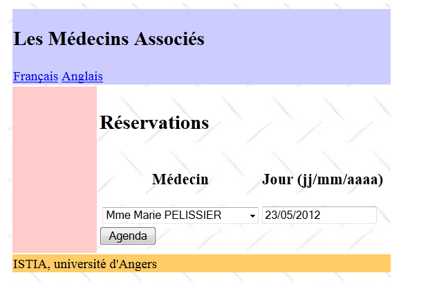 |
A partir de cette première page, l'utilisateur (Secrétariat, Médecin) va engager un certain nombre d'actions. Nous les présentons ci-dessous. La vue de gauche présente la vue à partir de laquelle l'utilisateur fait une demande, la vue de droite la réponse envoyée par le serveur.
 |
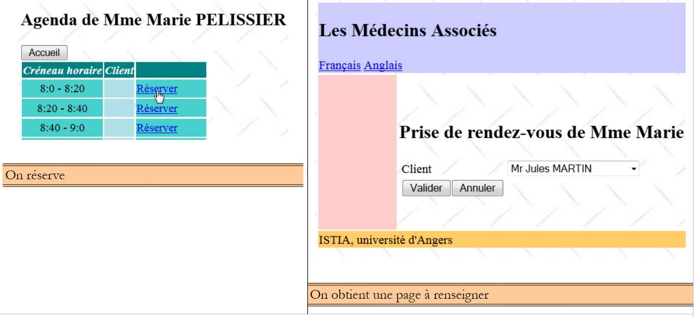 |
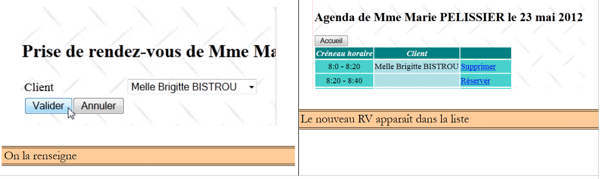 |
 |
 |
 |
Enfin, on peut également obtenir une page d'erreurs :
 |
3.3. La base de données
Revenons à l'architecture de l'application à construire :
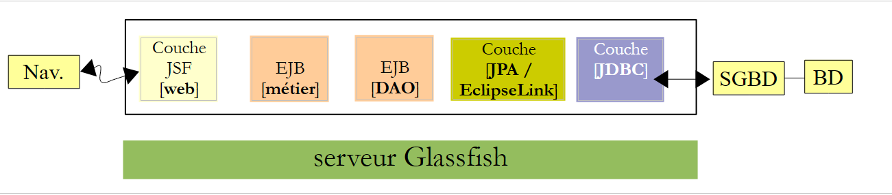 |
La base de données qu'on appellera [dbrdvmedecins2] est une base de données MySQL5 avec quatre tables :
 |
3.3.1. La table [MEDECINS]
Elle contient des informations sur les médecins gérés par l'application [RdvMedecins].
 |  |
- ID : n° identifiant le médecin - clé primaire de la table
- VERSION : n° identifiant la version de la ligne dans la table. Ce nombre est incrémenté de 1 à chaque fois qu'une modification est apportée à la ligne.
- NOM : le nom du médecin
- PRENOM : son prénom
- TITRE : son titre (Melle, Mme, Mr)
3.3.2. La table [CLIENTS]
Les clients des différents médecins sont enregistrés dans la table [CLIENTS] :
 |  |
- ID : n° identifiant le client - clé primaire de la table
- VERSION : n° identifiant la version de la ligne dans la table. Ce nombre est incrémenté de 1 à chaque fois qu'une modification est apportée à la ligne.
- NOM : le nom du client
- PRENOM : son prénom
- TITRE : son titre (Melle, Mme, Mr)
3.3.3. La table [CRENEAUX]
Elle liste les créneaux horaires où les RV sont possibles :
 |
 |
- ID : n° identifiant le créneau horaire - clé primaire de la table (ligne 8)
- VERSION : n° identifiant la version de la ligne dans la table. Ce nombre est incrémenté de 1 à chaque fois qu'une modification est apportée à la ligne.
- ID_MEDECIN : n° identifiant le médecin auquel appartient ce créneau – clé étrangère sur la colonne MEDECINS(ID).
- HDEBUT : heure début créneau
- MDEBUT : minutes début créneau
- HFIN : heure fin créneau
- MFIN : minutes fin créneau
La seconde ligne de la table [CRENEAUX] (cf [1] ci-dessus) indique, par exemple, que le créneau n° 2 commence à 8 h 20 et se termine à 8 h 40 et appartient au médecin n° 1 (Mme Marie PELISSIER).
3.3.4. La table [RV]
Elle liste les RV pris pour chaque médecin :
 |
- ID : n° identifiant le RV de façon unique – clé primaire
- JOUR : jour du RV
- ID_CRENEAU : créneau horaire du RV - clé étrangère sur le champ [ID] de la table [CRENEAUX] – fixe à la fois le créneau horaire et le médecin concerné.
- ID_CLIENT : n° du client pour qui est faite la réservation – clé étrangère sur le champ [ID] de la table [CLIENTS]
Cette table a une contrainte d'unicité sur les valeurs des colonnes jointes (JOUR, ID_CRENEAU) :
Si une ligne de la table[RV] a la valeur (JOUR1, ID_CRENEAU1) pour les colonnes (JOUR, ID_CRENEAU), cette valeur ne peut se retrouver nulle part ailleurs. Sinon, cela signifierait que deux RV ont été pris au même moment pour le même médecin. D'un point de vue programmation Java, le pilote JDBC de la base lance une SQLException lorsque ce cas se produit.
La ligne d'id égal à 3 (cf [1] ci-dessus) signifie qu'un RV a été pris pour le créneau n° 20 et le client n° 4 le 23/08/2006. La table [CRENEAUX] nous apprend que le créneau n° 20 correspond au créneau horaire 16 h 20 - 16 h 40 et appartient au médecin n° 1 (Mme Marie PELISSIER). La table [CLIENTS] nous apprend que le client n° 4 est Melle Brigitte BISTROU.
3.3.5. Génération de la base
Pour créer les tables et les remplir on pourra utiliser le script [dbrdvmedecins2.sql] qu'on trouvera sur le site des exemples. Avec [WampServer] (cf paragraphe 1.3.3), on pourra procéder comme suit :
 |
- en [1], on clique sur l'icône de [WampServer] et on choisit l'option [PhpMyAdmin] [2],
- en [3], dans la fenêtre sui s'est ouverte, on sélectionne le lien [Bases de données],
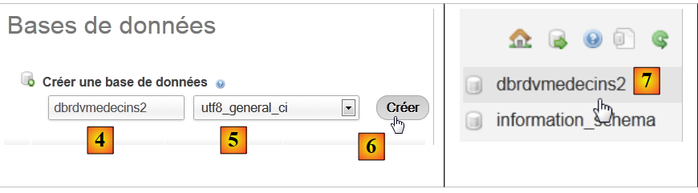 |
- en [2], on crée une base de données dont on a donné le nom [4] et l'encodage [5],
- en [7], la base a été créée. On clique sur son lien,
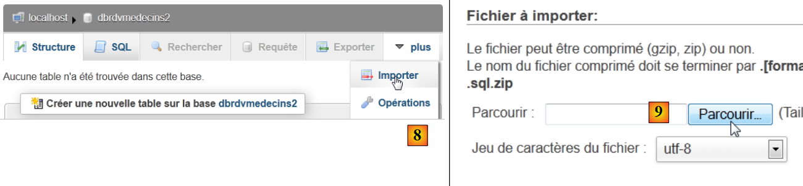 |
- en [8], on importe un fichier SQL,
- qu'on désigne dans le système de fichiers avec le bouton [9],
 |
- en [11], on sélectionne le script SQL et en [12] on l'exécute,
- en [13], les quatre tables de la base ont été créées. On suit l'un des liens,
 |
- en [14], le contenu de la table.
Par la suite, nous ne reviendrons plus sur cette base. Mais le lecteur est invité à suivre son évolution au fil des programmes surtout lorsque ça ne marche pas.
3.4. Les couches [DAO] et [JPA]
Revenons à l'architecture que nous devons construire :
 |
Nous allons construire quatre projets Maven :
- un projet pour les couches [DAO] et [JPA],
- un projet pour la couche [métier],
- un projet pour la couche [web],
- un projet d'entreprise qui va rassembler les trois projets précédents.
Nous construisons maintenant le projet Maven des couches [DAO] et [JPA].
Note : la compréhension des couches [métier], [DAO], [JPA] nécessite des connaissances en Java EE. Pour cela, on pourra lire [ref7] (cf paragraphe 3).
3.4.1. Le projet Netbeans
C'est le suivant :
 |
- en [1], on construit un projet Maven de type [EJB Module] [2],
- en [3], on donne un nom au projet,
 |
- en [4], on choisit comme serveur le serveur Glassfish,
- en [5], le projet généré.
3.4.2. Génération de la couche [JPA]
Revenons à l'architecture que nous devons construire :
 |
Avec Netbeans, il est possible de générer automatiquement la couche [JPA] et la couche [EJB] qui contrôle l'accès aux entités JPA générées. Il est intéressant de connaître ces méthodes de génération automatique car le code généré donne de précieuses indications sur la façon d'écrire des entités JPA ou le code EJB qui les utilise.
Nous décrivons maintenant certains de ces outils de génération automatique. Pour comprendre le code généré, il faut avoir de bonnes notions sur les entités JPA [ref8] et les EJB [ref7] (cf paragraphe 3).
3.4.2.1. Création d'une connexion Netbeans à la base de données
- lancer le SGBD MySQL 5 afin que la BD soit disponible,
- créer une connexion Netbeans sur la base [dbrdvmedecins2],
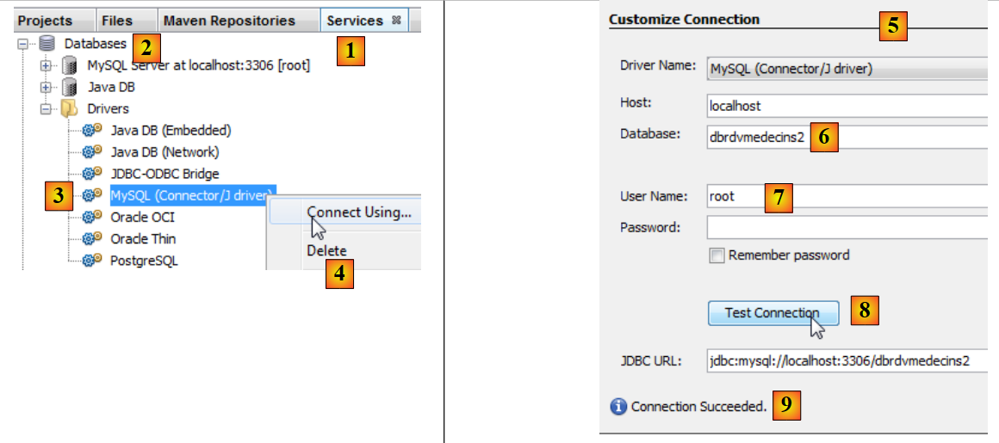 |
- dans l'onglet [Services] [1], dans la branche [Databases] [2], sélectionner le pilote JDBC MySQL [3],
- puis sélectionner l'option [4] "Connect Using" permettant de créer une connexion avec une base MySQL,
- en [5], donner les informations qui sont demandées. En [6], le nom de la base, en [7] l'utilisateur de la base et son mot de passe,
- en [8], on peut tester les informations qu'on a fournies,
- en [9], le message attendu lorsque celles-ci sont bonnes,
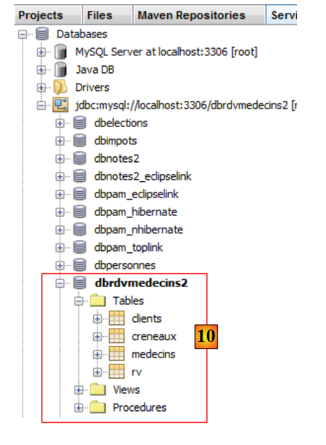 |
- en [10], la connexion est créée. On y voit les quatre tables de la base de données connectée.
3.4.2.2. Création d'une unité de persistance
Revenons à l'architecture en cours de construction :
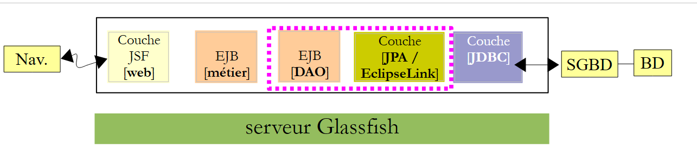 |
Nous sommes en train de construire la couche [JPA]. La configuration de celle-ci est faite dans un fichier [persistence.xml] dans lequel on définit des unités de persistance. Chacune d'elles a besoin des informations suivantes :
- les caractéristiques JDBC d'accès à la base (URL, utilisateur, mot de passe),
- les classes qui seront les images des tables de la base de données,
- l'implémentation JPA utilisée. En effet, JPA est une spécification implémentée par divers produits. Ici, nous utiliserons EclipseLink qui est l'implémentation par défaut utilisée par le serveur Glassfish. Cela nous évite d'adjoindre à Glassfish les bibliothèques d'une autre implémentation.
Netbeans peut générer ce fichier de persistance via l'utilisation d'un assistant.
 |
- cliquer droit sur le projet et choisir la création d'une unité de persistance [1],
- en [2], donner un nom à l'unité de persistance que l'on crée,
- en [3], choisir l'implémentation JPA EclipseLink (JPA 2.0),
- en [4], indiquer que les transactions avec la base de données seront gérées par le conteneur EJB du serveur Glassfish,
- en [5], indiquer que les tables de la BD sont déjà créées et que donc on ne les crée pas,
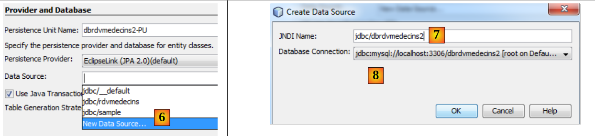 |
- en [6], créer une nouvelle source de données pour le serveur Glassfish,
- en [7], donner un nom JNDI (Java Naming Directory Interface),
- en [8], relier ce nom à la connexion MySQL créée à l'étape précédente,
 |
- en [9], terminer l'assistant,
- en [10], le nouveau projet,
- en [11], le fichier [persistence.xml] a été généré dans le dossier [META-INF],
- en [12], un dossier [setup] a été généré,
- en [13], de nouvelles dépendances ont été ajoutées au projet Maven.
Le fichier [META-INF/persistence.xml] généré est le suivant :
<?xml version="1.0" encoding="UTF-8"?>
<persistence version="2.0" xmlns="http://java.sun.com/xml/ns/persistence" xmlns:xsi="http://www.w3.org/2001/XMLSchema-instance" xsi:schemaLocation="http://java.sun.com/xml/ns/persistence http://java.sun.com/xml/ns/persistence/persistence_2_0.xsd">
<persistence-unit name="dbrdvmedecins2-PU" transaction-type="JTA">
<jta-data-source>jdbc/dbrdvmedecins2</jta-data-source>
<exclude-unlisted-classes>false</exclude-unlisted-classes>
<properties/>
</persistence-unit>
</persistence>
Il reprend les informations données dans l'assistant :
- ligne 3 : le nom de l'unité de persistance,
- ligne 3 : le type de transactions avec la base de données, ici des transactions JTA (Java Transaction Api) gérées par le conteneur EJB3 du serveur Glassfish,
- ligne 4 : le nom JNDI de la source de données.
Normalement, on trouve dans ce fichier le type d'implémentation JPA utilisée. Dans l'assistant, nous avons indiqué EclipseLink. Comme c'est l'implémentation JPA utilisée par défaut par le serveur Glassfish, elle n'est pas mentionnée dans le fichier [persistence.xml].
Dans l'onglet [Design], on peut avoir une vue globale du fichier [persistence.xml] :
 |
Pour avoir des logs d'EclipseLink, nous utiliserons le fichier [persistence.xml] suivant :
<?xml version="1.0" encoding="UTF-8"?>
<persistence version="2.0" xmlns="http://java.sun.com/xml/ns/persistence" xmlns:xsi="http://www.w3.org/2001/XMLSchema-instance" xsi:schemaLocation="http://java.sun.com/xml/ns/persistence http://java.sun.com/xml/ns/persistence/persistence_2_0.xsd">
<persistence-unit name="dbrdvmedecins2-PU" transaction-type="JTA">
<provider>org.eclipse.persistence.jpa.PersistenceProvider</provider>
<jta-data-source>jdbc/dbrdvmedecins2</jta-data-source>
<exclude-unlisted-classes>false</exclude-unlisted-classes>
<properties>
<property name="eclipselink.logging.level" value="FINE"/>
</properties>
</persistence-unit>
</persistence>
- ligne 4 : on indique qu'on utilise l'implémentation JPA d'EclipseLink,
- lignes 7-9 : rassemblent les propriétés de configuration du provider JPA, ici EclipseLink,
- ligne 8 : cette propriété permet de loguer les ordres SQL que va émettre EclipseLink.
Le fichier [glassfish-resources.xml] qui a été créé est le suivant :
<?xml version="1.0" encoding="UTF-8"?>
<!DOCTYPE resources PUBLIC "-//GlassFish.org//DTD GlassFish Application Server 3.1 Resource Definitions//EN" "http://glassfish.org/dtds/glassfish-resources_1_5.dtd">
<resources>
<jdbc-connection-pool allow-non-component-callers="false" ... steady-pool-size="8" validate-atmost-once-period-in-seconds="0" wrap-jdbc-objects="false">
<property name="serverName" value="localhost"/>
<property name="portNumber" value="3306"/>
<property name="databaseName" value="dbrdvmedecins2"/>
<property name="User" value="root"/>
<property name="Password" value=""/>
<property name="URL" value="jdbc:mysql://localhost:3306/dbrdvmedecins2"/>
<property name="driverClass" value="com.mysql.jdbc.Driver"/>
</jdbc-connection-pool>
<jdbc-resource enabled="true" jndi-name="jdbc/dbrdvmedecins2" object-type="user" pool-name="mysql_dbrdvmedecins2_rootPool"/>
</resources>
Ce fichier reprend les informations que nous avons données dans les deux assistants utilisés précédemment :
- lignes 5-11 : les caractéristiques JDBC de la base de données MySQL5 [dbrdvmedecins2],
- ligne 13 : le nom JNDI de la source de données.
Ce fichier va être utilisé pour créer la source de données JNDI [jdbc/dbrdvmedecins2] du serveur Glassfish. C'est complètement propriétaire à ce serveur. Pour un autre serveur, il faudrait s'y prendre autrement, généralement par un outil d'administration. Celui-ci existe également pour Glassfish.
Enfin, des dépendances ont été ajoutées au projet. Le fichier [pom.xml] est le suivant :
<project xmlns="http://maven.apache.org/POM/4.0.0" xmlns:xsi="http://www.w3.org/2001/XMLSchema-instance"
xsi:schemaLocation="http://maven.apache.org/POM/4.0.0 http://maven.apache.org/xsd/maven-4.0.0.xsd">
<modelVersion>4.0.0</modelVersion>
<groupId>istia.st</groupId>
<artifactId>mv-rdvmedecins-ejb-dao-jpa</artifactId>
<version>1.0-SNAPSHOT</version>
<packaging>ejb</packaging>
<name>mv-rdvmedecins-ejb-dao-jpa</name>
...
<dependencies>
<dependency>
<groupId>org.eclipse.persistence</groupId>
<artifactId>eclipselink</artifactId>
<version>2.3.0</version>
<scope>provided</scope>
</dependency>
<dependency>
<groupId>org.eclipse.persistence</groupId>
<artifactId>javax.persistence</artifactId>
<version>2.0.3</version>
<scope>provided</scope>
</dependency>
<dependency>
<groupId>org.eclipse.persistence</groupId>
<artifactId>org.eclipse.persistence.jpa.modelgen.processor</artifactId>
<version>2.3.0</version>
<scope>provided</scope>
</dependency>
<dependency>
<groupId>javax</groupId>
<artifactId>javaee-api</artifactId>
<version>6.0</version>
<scope>provided</scope>
</dependency>
</dependencies>
...
<repositories>
<repository>
<url>http://download.eclipse.org/rt/eclipselink/maven.repo/</url>
<id>eclipselink</id>
<layout>default</layout>
<name>Repository for library Library[eclipselink]</name>
</repository>
</repositories>
</project>
- ligne 32-37, une couche [JPA] nécessite l'artifact [javaee-api],
- lignes 16, 22, 28, les artifacts nécessités par l'implémentation JPA / EclipseLink utilisée ici.
- lignes 18, 24, 30, 36 : tous les artifacts ont l'attribut provided. On rappelle que cela veut dire qu'ils sont nécessaires pour la compilation mais pas pour l'exécution. En effet, lors de l'exécution, ils sont fournis (provided) par le serveur Glassfish,
- lignes 41-48 : définissent un nouveau dépôt d'artifacts Maven, celui où les artifacts EclipseLink peuvent être trouvés.
3.4.2.3. Génération des entités JPA
Les entités JPA peuvent être générées par un assistant de Netbeans :
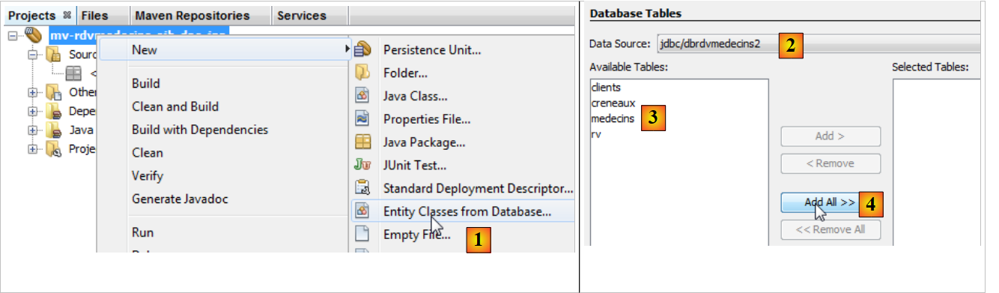 |
- en [1], on crée des entités JPA à partir d'une base de données,
- en [2], on sélectionne la source de données [jdbc / dbrdvmedecins2] créée précédemment,
- en [3], la liste des tables de cette source de données,
- en [4], on les prend toutes,
 |
- en [5], les tables sélectionnées,
- en [6], on donne un nom aux classes Java associées aux quatre tables,
- ainsi qu'un nom de paquetage [7],
- en [8], JPA rassemble des lignes de tables de BD dans des collections. Nous choisissons la liste comme collection,
 |
- en [9], les classes Java créées par l'assistant.
3.4.2.4. Les entités JPA générées
L'entité [Medecin] est l'image de la table [medecins]. La classe Java est truffée d'annotations qui rendent le code peu lisible au premier abord. Si on ne garde que ce qui est essentiel à la compréhension du rôle de l'entité, on obtient le code suivant :
package rdvmedecins.jpa;
...
@Entity
@Table(name = "medecins")
public class Medecin implements Serializable {
@Id
@GeneratedValue(strategy = GenerationType.IDENTITY)
@Column(name = "ID")
private Long id;
@Column(name = "TITRE")
private String titre;
@Column(name = "NOM")
private String nom;
@Column(name = "VERSION")
private int version;
@Column(name = "PRENOM")
private String prenom;
@OneToMany(cascade = CascadeType.ALL, mappedBy = "idMedecin")
private List<Creneau> creneauList;
// constructeurs
....
// getters et setters
....
@Override
public int hashCode() {
...
}
@Override
public boolean equals(Object object) {
...
}
@Override
public String toString() {
...
}
}
- ligne 4, l'annotation @Entity fait de la classe [Medecin], une entité JPA, c.a.d. une classe liée à une table de BD via l'API JPA,
- ligne 5, le nom de la table de BD associée à l'entité JPA. Chaque champ de la table fait l'objet d'un champ dans la classe Java,
- ligne 6, la classe implémente l'interface Serializable. Ceci est nécessaire dans les applications client / serveur, où les entités sont sérialisées entre le client et le serveur.
- lignes 10-11 : le champ id de la classe [Medecin] correspond au champ [ID] (ligne 10) de la table [medecins],
- lignes 13-14 : le champ titre de la classe [Medecin] correspond au champ [TITRE] (ligne 13) de la table [medecins],
- lignes 16-17 : le champ nom de la classe [Medecin] correspond au champ [NOM] (ligne 16) de la table [medecins],
- lignes 19-20 : le champ version de la classe [Medecin] correspond au champ [VERSION] (ligne 19) de la table [medecins]. Ici, l'assistant ne reconnaît pas le fait que la colonne est en fait un colonne de version qui doit être incrémentée à chaque modification de la ligne à laquelle elle appartient. Pour lui donner ce rôle, il faut ajouter l'annotation @Version. Nous le ferons dans une prochaine étape,
- lignes 22-23 : le champ prenom de la classe [Medecin] correspond au champ [PRENOM] de la table [medecins],
- lignes 10-11 : le champ id correspond à la clé primaire [ID] de la table. Les annotations des lignes 8-9 précisent ce point,
- ligne 8 : l'annotation @Id indique que le champ annoté est associé à la clé primaire de la table,
- ligne 9 : la couche [JPA] va générer la clé primaire des lignes qu'elle insèrera dans la table [Medecins]. Il y a plusieurs stratégies possibles. Ici la stratégie GenerationType.IDENTITY indique que la couche JPA va utiliser le mode auto_increment de la table MySQL,
- lignes 25-26 : la table [creneaux] a une clé étrangère sur la table [medecins]. Un créneau appartient à un médecin. Inversement, un médecin a plusieurs créneaux qui lui sont associés. On a donc une relation un (médecin) à plusieurs (créneaux), une relation qualifiée par l'annotation @OneToMany par JPA (ligne 25). Le champ de la ligne 26 contiendra tous les créneaux du médecin. Ceci sans programmation. Pour comprendre totalement la ligne 25, il nous faut présenter la classe [Creneau].
Celle-ci est la suivante :
package rdvmedecins.jpa;
import java.io.Serializable;
import java.util.List;
import javax.persistence.*;
import javax.validation.constraints.NotNull;
@Entity
@Table(name = "creneaux")
public class Creneau implements Serializable {
@Id
@GeneratedValue(strategy = GenerationType.IDENTITY)
@Column(name = "ID")
private Long id;
@Column(name = "MDEBUT")
private int mdebut;
@Column(name = "HFIN")
private int hfin;
@Column(name = "HDEBUT")
private int hdebut;
@Column(name = "MFIN")
private int mfin;
@Column(name = "VERSION")
private int version;
@JoinColumn(name = "ID_MEDECIN", referencedColumnName = "ID")
@ManyToOne(optional = false)
private Medecin idMedecin;
@OneToMany(cascade = CascadeType.ALL, mappedBy = "idCreneau")
private List<Rv> rvList;
// constructeurs
...
// getters et setters
...
@Override
public int hashCode() {
...
}
@Override
public boolean equals(Object object) {
...
}
@Override
public String toString() {
...
}
}
Nous ne commentons que les nouvelles annotations :
- nous avons dit que la table [creneaux] avait une clé étrangère vers la table [medecins] : un créneau est associé à un médecin. Plusieurs créneaux peuvent être asssociés au même médecin. On a une relation de la table [creneaux] vers la table [medecins] qui est qualifiée de plusieurs (créneaux) à un (médecin). C'est l'annotation @ManyToOne de la ligne 32 qui sert à qualifier la clé étrangère,
- la ligne 31 avec l'annotation @JoinColumn précise la relation de clé étrangère : la colonne [ID_MEDECIN] de la table [creneaux] est clé étrangère sur la colonne [ID] de la table [medecins],
- ligne 33 : une référence sur le médecin propriétaire du créneau. On l'obtient là encore sans programmation.
Le lien de clé étrangère entre l'entité [Creneau] et l'entité [Medecin] est donc matérialisé par deux annotations :
- dans l'entité [Creneau] :
@JoinColumn(name = "ID_MEDECIN", referencedColumnName = "ID")
@ManyToOne(optional = false)
private Medecin idMedecin;
- dans l'entité [Medecin] :
@OneToMany(cascade = CascadeType.ALL, mappedBy = "idMedecin")
private List<Creneau> creneauList;
Les deux annotations reflètent la même relation : celle de la clé étrangère de la table [creneaux] vers la table [medecins]. On dit qu'elles sont inverses l'une de l'autre. Seule la relation @ManyToOne est indispensable. Elle qualifie sans ambiguïté la relation de clé étrangère. La relation @OneToMany est facultative. Si elle est présente, elle se contente de référencer la relation @ManyToOne à laquelle elle est associée. C'est le sens de l'attribut mappedBy de la ligne 1 de l'entité [Medecin]. La valeur de cet attribut est le nom du champ de l'entité [Creneau] qui a l'annotation @ManyToOne qui spécifie la clé étrangère. Toujours dans cette même ligne 1 de l'entité [Medecin], l'attribut cascade=CascadeType.ALL fixe le comportement de l'entité [Medecin] vis à vis de l'entité [Creneau] :
- si on insère une nouvelle entité [Medecin] dans la base, alors les entités [Creneau] du champ de la ligne 2 doivent être insérées elles-aussi,
- si on modifie une entité [Medecin] dans la base, alors les entités [Creneau] du champ de la ligne 2 doivent être modifiées elles-aussi,
- si on supprime une entité [Medecin] dans la base, alors les entités [Creneau] du champ de la ligne 2 doivent être supprimées elles-aussi.
Nous donnons le code des deux autres entités sans commentaires particuliers puisqu'elles n'introduisent pas de nouvelles notations.
L'entité [Client]
package rdvmedecins.jpa;
...
@Entity
@Table(name = "clients")
public class Client implements Serializable {
@Id
@GeneratedValue(strategy = GenerationType.IDENTITY)
@Column(name = "ID")
private Long id;
@Column(name = "TITRE")
private String titre;
@Column(name = "NOM")
private String nom;
@Column(name = "VERSION")
private int version;
@Column(name = "PRENOM")
private String prenom;
@OneToMany(cascade = CascadeType.ALL, mappedBy = "idClient")
private List<Rv> rvList;
// constructeurs
...
// getters et setters
...
@Override
public int hashCode() {
...
}
@Override
public boolean equals(Object object) {
...
}
@Override
public String toString() {
...
}
}
- les lignes 24-25 reflètent la relation de clé étrangère entre la table [rv] et la table [clients].
L'entité [Rv] :
package rdvmedecins.jpa;
...
@Entity
@Table(name = "rv")
public class Rv implements Serializable {
@Id
@GeneratedValue(strategy = GenerationType.IDENTITY)
@Column(name = "ID")
private Long id;
@Column(name = "JOUR")
@Temporal(TemporalType.DATE)
private Date jour;
@JoinColumn(name = "ID_CRENEAU", referencedColumnName = "ID")
@ManyToOne(optional = false)
private Creneau idCreneau;
@JoinColumn(name = "ID_CLIENT", referencedColumnName = "ID")
@ManyToOne(optional = false)
private Client idClient;
// constructeurs
...
// getters et setters
...
@Override
public int hashCode() {
...
}
@Override
public boolean equals(Object object) {
...
}
@Override
public String toString() {
...
}
}
- la ligne 13 qualifie le champ jour de type Java Date. On indique que dans la table [rv], la colonne [JOUR] (ligne 12) est de type date (sans heure),
- lignes 16-18 : qualifient la relation de clé étrangère qu'a la table [rv] vers la table [creneaux],
- lignes 20-22 : qualifient la relation de clé étrangère qu'a la table [rv] vers la table [clients].
La génération automatique des entités JPA nous permet d'obtenir une base de travail. Parfois elle est suffisante, parfois pas. C'est le cas ici :
- il faut ajouter l'annotation @Version aux différents champs version des entités,
- il faut écrire des méthodes toString plus explicites que celles générées,
- les entités [Medecin] et [Client] sont analogues. On va les faire dériver d'une classe [Personne],
- on va supprimer les relations @OneToMany inverses des relations @ManyToOne. Elles ne sont pas indispensables et elles amènent des complications de programmation,
- on supprime la validation @NotNull sur les clés primaires. Lorsqu'on persiste une entité JPA avec MySQL, l'entité au départ a une clé primaire null. Ce n'est qu'après persistance dans la base, que la clé primaire de l'élément persisté a une valeur.
Avec ces spécifications, les différentes classes deviennent les suivantes :
La classe Personne est utilisée pour représenter les médecins et les clients :
package rdvmedecins.jpa;
import java.io.Serializable;
import javax.persistence.*;
import javax.validation.constraints.NotNull;
import javax.validation.constraints.Size;
@MappedSuperclass
public class Personne implements Serializable {
private static final long serialVersionUID = 1L;
@Id
@GeneratedValue(strategy = GenerationType.IDENTITY)
@Column(name = "ID")
private Long id;
@Basic(optional = false)
@Size(min = 1, max = 5)
@Column(name = "TITRE")
private String titre;
@Basic(optional = false)
@NotNull
@Size(min = 1, max = 30)
@Column(name = "NOM")
private String nom;
@Basic(optional = false)
@NotNull
@Column(name = "VERSION")
@Version
private int version;
@Basic(optional = false)
@NotNull
@Size(min = 1, max = 30)
@Column(name = "PRENOM")
private String prenom;
// constructeurs
...
// getters et setters
...
@Override
public String toString() {
return String.format("[%s,%s,%s,%s,%s]", id, version, titre, prenom, nom);
}
}
- ligne 8 : on notera que la classe [Personne] n'est pas elle-même une entité (@Entity). Elle va être la classe parent d'entités. L'annotation @MappedSuperClass désigne cette situation.
L'entité [Client] encapsule les lignes de la table [clients]. Elle dérive de la classe [Personne] précédente :
package rdvmedecins.jpa;
import java.io.Serializable;
import javax.persistence.*;
@Entity
@Table(name = "clients")
public class Client extends Personne implements Serializable {
private static final long serialVersionUID = 1L;
// constructeurs
...
@Override
public int hashCode() {
...
}
@Override
public boolean equals(Object object) {
...
}
@Override
public String toString() {
return String.format("Client[%s,%s,%s,%s]", getId(), getTitre(), getPrenom(), getNom());
}
}
- ligne 6 : la classe [Client] est une entité Jpa,
- ligne 7 : elle est associée à la table [clients],
- ligne 8 : elle dérive de la classe [Personne].
L'entité [Medecin] qui encapsule les lignes de la table [medecins] suit le même modèle :
package rdvmedecins.jpa;
import java.io.Serializable;
import javax.persistence.*;
@Entity
@Table(name = "medecins")
public class Medecin extends Personne implements Serializable {
private static final long serialVersionUID = 1L;
// constructeurs
...
@Override
public int hashCode() {
...
}
@Override
public boolean equals(Object object) {
...
}
@Override
public String toString() {
return String.format("Médecin[%s,%s,%s,%s]", getId(), getTitre(), getPrenom(), getNom());
}
}
L'entité [Creneau] encapsule les lignes de la table [creneaux] :
package rdvmedecins.jpa;
import java.io.Serializable;
import java.util.List;
import javax.persistence.*;
import javax.validation.constraints.NotNull;
@Entity
@Table(name = "creneaux")
public class Creneau implements Serializable {
private static final long serialVersionUID = 1L;
@Id
@GeneratedValue(strategy = GenerationType.IDENTITY)
@Basic(optional = false)
@Column(name = "ID")
private Long id;
@Basic(optional = false)
@NotNull
@Column(name = "MDEBUT")
private int mdebut;
@Basic(optional = false)
@NotNull
@Column(name = "HFIN")
private int hfin;
@Basic(optional = false)
@NotNull
@Column(name = "HDEBUT")
private int hdebut;
@Basic(optional = false)
@NotNull
@Column(name = "MFIN")
private int mfin;
@Basic(optional = false)
@NotNull
@Column(name = "VERSION")
@Version
private int version;
@JoinColumn(name = "ID_MEDECIN", referencedColumnName = "ID")
@ManyToOne(optional = false)
private Medecin medecin;
// constructeurs
...
// getters et setters
...
@Override
public int hashCode() {
...
}
@Override
public boolean equals(Object object) {
// TODO: Warning - this method won't work in the case the id fields are not set
...
}
@Override
public String toString() {
return String.format("Creneau [%s, %s, %s:%s, %s:%s,%s]", id, version, hdebut, mdebut, hfin, mfin, medecin);
}
}
- les lignes 45-47 modélisent la relation "plusieurs à un" qui existe entre la table [creneaux] et la table [medecins] de la base de données : un médecin a plusieurs créneaux, un créneau appartient à un seul médecin.
L'entité [Rv] encapsule les lignes de la table [rv] :
package rdvmedecins.jpa;
import java.io.Serializable;
import java.util.Date;
import javax.persistence.*;
import javax.validation.constraints.NotNull;
@Entity
@Table(name = "rv")
public class Rv implements Serializable {
private static final long serialVersionUID = 1L;
@Id
@GeneratedValue(strategy = GenerationType.IDENTITY)
@Basic(optional = false)
@Column(name = "ID")
private Long id;
@Basic(optional = false)
@NotNull
@Column(name = "JOUR")
@Temporal(TemporalType.DATE)
private Date jour;
@JoinColumn(name = "ID_CRENEAU", referencedColumnName = "ID")
@ManyToOne(optional = false)
private Creneau creneau;
@JoinColumn(name = "ID_CLIENT", referencedColumnName = "ID")
@ManyToOne(optional = false)
private Client client;
// constructeurs
...
// getters et setters
...
@Override
public int hashCode() {
...
}
@Override
public boolean equals(Object object) {
...
}
@Override
public String toString() {
return String.format("Rv[%s, %s, %s]", id, creneau, client);
}
}
- les lignes 29-31 modélisent la relation "plusieurs à un" qui existe entre la table [rv] et la table [clients] (un client peut apparaître dans plusieurs Rv) de la base de données et les lignes 25-27 la relation "plusieurs à un" qui existe entre la table [rv] et la table [creneaux] (un créneau peut apparaître dans plusieurs Rv).
3.4.3. La classe d'exception
 |
La classe d'exception [RdvMedecinsException] de l'application est la suivante :
package rdvmedecins.exceptions;
import java.io.Serializable;
import javax.ejb.ApplicationException;
@ApplicationException(rollback=true)
public class RdvMedecinsException extends RuntimeException implements Serializable{
// champs privés
private int code = 0;
// constructeurs
public RdvMedecinsException() {
super();
}
public RdvMedecinsException(String message) {
super(message);
}
public RdvMedecinsException(String message, Throwable cause) {
super(message, cause);
}
public RdvMedecinsException(Throwable cause) {
super(cause);
}
public RdvMedecinsException(String message, int code) {
super(message);
setCode(code);
}
public RdvMedecinsException(Throwable cause, int code) {
super(cause);
setCode(code);
}
public RdvMedecinsException(String message, Throwable cause, int code) {
super(message, cause);
setCode(code);
}
// getters - setters
public int getCode() {
return code;
}
public void setCode(int code) {
this.code = code;
}
}
- ligne 7 : la classe dérive de la classe [RuntimeException]. Le compilateur ne force donc pas à la gérer avec des try / catch.
- ligne 6 : l'annotation @ApplicationException fait que l'exception ne sera pas "avalée" par une exception de type [EjbException].
Pour comprendre l'annotation @ApplicationException, revenons à l'architecture utilisée côté serveur :
 |
L'exception de type [RdvMedecinsException] sera lancée par les méthodes de l'EJB de la couche [DAO] à l'intérieur du conteneur EJB3 et interceptée par celui-ci. Sans l'annotation @ApplicationException le conteneur EJB3 encapsule l'exception survenue, dans une exception de type [EjbException] et relance celle-ci. On peut ne pas vouloir de cette encapsulation et laisser sortir du conteneur EJB3 une exception de type [RdvMedecinsException]. C'est ce que permet l'annotation @ApplicationException. Par ailleurs, l'attribut (rollback=true) de cette annotation indique au conteneur EJB3 que si l'exception de type [RdvMedecinsException] se produit à l'intérieur d'une méthode exécutée au sein d'une transaction avec un SGBD, celle-ci doit être annulée. En termes techniques, cela s'appelle faire un rollback de la transaction.
3.4.4. L'EJB de la couche [DAO]
 |
 |
L'interface java [IDao] de la couche [DAO] est la suivante :
package rdvmedecins.dao;
import java.util.Date;
import java.util.List;
import rdvmedecins.jpa.Client;
import rdvmedecins.jpa.Creneau;
import rdvmedecins.jpa.Medecin;
import rdvmedecins.jpa.Rv;
public interface IDao {
// liste des clients
public List<Client> getAllClients();
// liste des Médecins
public List<Medecin> getAllMedecins();
// liste des créneaux horaires d'un médecin
public List<Creneau> getAllCreneaux(Medecin medecin);
// liste des Rv d'un médecin, un jour donné
public List<Rv> getRvMedecinJour(Medecin medecin, Date jour);
// trouver un client identifié par son id
public Client getClientById(Long id);
// trouver un client identifié par son id
public Medecin getMedecinById(Long id);
// trouver un Rv identifié par son id
public Rv getRvById(Long id);
// trouver un créneau horaire identifié par son id
public Creneau getCreneauById(Long id);
// ajouter un RV
public Rv ajouterRv(Date jour, Creneau creneau, Client client);
// supprimer un RV
public void supprimerRv(Rv rv);
}
Cette interface a été construite après avoir identifié les besoins de la couche [web] :
- ligne 14 : la liste des clients. Nous en aurons besoin pour alimenter la liste déroulante des clients,
- ligne 16 : la liste des médecins. Nous en aurons besoin pour alimenter la liste déroulante des médecins,
- ligne 18 : la liste des créneaux horaires d'un médecin. On en aura besoin pour afficher l'agenda du médecin pour un jour donné,
- ligne 20 : la liste des rendez-vous d'un médecin pour un jour donné. Combinée avec la méthode précédente, elle nous permettra d'afficher l'agenda du médecin pour un jour donné avec ses créneaux déjà réservés,
- ligne 22 : permet de retrouver un client à partir de son n°. La méthode nous permettra de retrouver un client à partir d'un choix dans la liste déroulante des clients,
- ligne 24 : idem pour les médecins,
- ligne 26 : retrouve un rendez-vous par son n°. Peut être utilisé lorsqu'on supprime un rendez-vous pour vérifier auparavant qu'il existe bien,
- ligne 28 : retrouve un créneau horaire à partir de son n°. Permet d'identifier le créneau qu'un utilisateur veut ajouter ou supprimer,
- ligne 30 : pour ajouter un rendez-vous,
- ligne 32 : pour supprimer un rendez-vous.
L'interface locale [IDaoLocal] de l'EJB se contente de dériver l'interface [IDao] précédente :
package rdvmedecins.dao;
import javax.ejb.Local;
@Local
public interface IDaoLocal extends IDao{
}
Il en est de même pour l'interface distante [IDaoRemote] :
package rdvmedecins.dao;
import javax.ejb.Remote;
@Remote
public interface IDaoRemote extends IDao{
}
L'EJB [DaoJpa] implémente les deux interfaces, locale et distante :
package rdvmedecins.dao;
...
@Singleton (mappedName="rdvmedecins.dao")
@TransactionAttribute(TransactionAttributeType.REQUIRED)
public class DaoJpa implements IDaoLocal, IDaoRemote, Serializable {
- la ligne 5 indique que l'EJB distant porte le nom "rdvmedecins.dao". Par ailleurs, l'annotation @Singleton (Java EE6) fait qu'il n'y aura qu'une instance de l'EJB créée. L'annotation @Stateless (Java EE5) définit un EJB qui peut être créé en de multiples instances pour alimenter un pool d'EJB,
- la ligne 6 indique que toutes les méthodes de l'EJB se déroulent au sein d'une transaction gérée par le conteneur EJB3,
- la ligne 7 montre que l'EJB implémente les interfaces locale et distante et est également sérialisable.
Le code complet de l'EJB est le suivant :
package rdvmedecins.dao;
import java.io.Serializable;
import java.util.Date;
import java.util.List;
import javax.ejb.Singleton;
import javax.ejb.TransactionAttribute;
import javax.ejb.TransactionAttributeType;
import javax.persistence.EntityManager;
import javax.persistence.PersistenceContext;
import rdvmedecins.exceptions.RdvMedecinsException;
import rdvmedecins.jpa.Client;
import rdvmedecins.jpa.Creneau;
import rdvmedecins.jpa.Medecin;
import rdvmedecins.jpa.Rv;
@Singleton (mappedName="rdvmedecins.dao")
@TransactionAttribute(TransactionAttributeType.REQUIRED)
public class DaoJpa implements IDaoLocal, IDaoRemote, Serializable {
@PersistenceContext
private EntityManager em;
// liste des clients
public List<Client> getAllClients() {
try {
return em.createQuery("select rc from Client rc").getResultList();
} catch (Throwable th) {
throw new RdvMedecinsException(th, 1);
}
}
// liste des médecins
public List<Medecin> getAllMedecins() {
try {
return em.createQuery("select rm from Medecin rm").getResultList();
} catch (Throwable th) {
throw new RdvMedecinsException(th, 2);
}
}
// liste des créneaux horaires d'un médecin donné
// medecin : le médecin
public List<Creneau> getAllCreneaux(Medecin medecin) {
try {
return em.createQuery("select rc from Creneau rc join rc.medecin m where m.id=:idMedecin").setParameter("idMedecin", medecin.getId()).getResultList();
} catch (Throwable th) {
throw new RdvMedecinsException(th, 3);
}
}
// liste des Rv d'un médecin donné, un jour donné
// medecin : le médecin
// jour : le jour
public List<Rv> getRvMedecinJour(Medecin medecin, Date jour) {
try {
return em.createQuery("select rv from Rv rv join rv.creneau c join c.idMedecin m where m.id=:idMedecin and rv.jour=:jour").setParameter("idMedecin", medecin.getId()).setParameter("jour", jour).getResultList();
} catch (Throwable th) {
throw new RdvMedecinsException(th, 3);
}
}
// ajout d'un Rv
// jour : jour du Rv
// creneau : créneau horaire du Rv
// client : client pour lequel est pris le Rv
public Rv ajouterRv(Date jour, Creneau creneau, Client client) {
try {
Rv rv = new Rv(null, jour);
rv.setClient(client);
rv.setCreneau(creneau);
em.persist(rv);
return rv;
} catch (Throwable th) {
throw new RdvMedecinsException(th, 4);
}
}
// suppression d'un Rv
// rv : le Rv supprimé
public void supprimerRv(Rv rv) {
try {
em.remove(em.merge(rv));
} catch (Throwable th) {
throw new RdvMedecinsException(th, 5);
}
}
// récupérer un client donné
public Client getClientById(Long id) {
try {
return (Client) em.find(Client.class, id);
} catch (Throwable th) {
throw new RdvMedecinsException(th, 6);
}
}
// récupérer un médecin donné
public Medecin getMedecinById(Long id) {
try {
return (Medecin) em.find(Medecin.class, id);
} catch (Throwable th) {
throw new RdvMedecinsException(th, 6);
}
}
// récupérer un Rv donné
public Rv getRvById(Long id) {
try {
return (Rv) em.find(Rv.class, id);
} catch (Throwable th) {
throw new RdvMedecinsException(th, 6);
}
}
// récupérer un créneau donné
public Creneau getCreneauById(Long id) {
try {
return (Creneau) em.find(Creneau.class, id);
} catch (Throwable th) {
throw new RdvMedecinsException(th, 6);
}
}
}
- ligne 22 : l'objet EntityManager qui gère l'accès au contexte de persistance. A l'instanciation de la classe, ce champ sera initialisé par le conteneur EJB grâce à l'annotation @PersistenceContext de la ligne 21,
- ligne 27 : requête JPQL (Java Persistence Query Language) qui retourne toutes les lignes de la table [clients] sous la forme d'une liste d'objets [Client],
- ligne 36 : requête analogue pour les médecins,
- ligne 46 : une requête JPQL réalisant une jointure entre les tables [creneaux] et [medecins]. Elle est paramétrée par l'id du médecin,
- ligne 57 : une requête JPQL réalisant une jointure entre les tables [rv], [creneaux] et [medecins] et ayant deux paramètres : l'id du médecin et le jour du Rv,
- lignes 69-73 : création d'un Rv puis persistance de celui-ci en base de données,
- ligne 83 : suppression d'un Rv en base de données,
- ligne 92 : réalise un select sur la base de données pour trouver un client donné,
- ligne 101 : idem pour un médecin,
- ligne 110 : idem pour un Rv,
- ligne 119 : idem pour un créneau horaire,
- toutes les opérations avec le contexte de persistance em de la ligne 22 sont susceptibles de rencontrer un problème avec la base de données. Aussi sont-elles toutes entourées par un try / catch. L'éventuelle exception est encapsulée dans l'exception "maison" RdvMedecinsException.
3.4.5. Mise en place du pilote JDBC de MySQL
Dans l'architecture ci-dessous :
 |
EclipseLink a besoin du pilote JDBC de MySQL. Il faut installer celui-ci dans les bibliothèques du serveur Glassfish dans le dossier <glassfish> /domains /domain1 /lib /ext où <glassfish> est le dossier d'installation du serveur Glassfish. On peut obtenir celui-ci de la façon suivante :
 |
Le dossier où mettre le pilote JDBC de MySQL est <Domains folder>[1]/domain1/lib/ext [2]. Ce pilote est disponible à l'URL [http://www.mysql.fr/downloads/connector/j/]. Une fois celui-ci installé, il faut relancer le serveur Glassfish pour qu'il prenne en compte cette nouvelle bibliothèque.
3.4.6. Déploiement de l'EJB de la couche [DAO]
Revenons à l'architecture construite pour le moment :
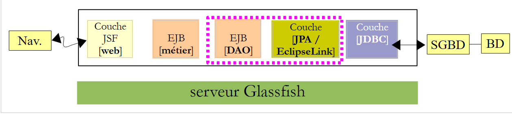 |
L'ensemble [web, métier, DAO, JPA] doit être déployé sur le serveur Glassfish. Nous le faisons :
 |
- en [1], on construit le projet Maven,
- en [2], on l'exécute,
- en [3], il a été déployé sur le serveur Glassfish (onglet [Services])
On peut avoir la curiosité de regarder les logs de Glassfish :
 |
En [1], les logs de Glassfish sont disponibles dans l'onglet [Output / Glassfish Server 3+]. Ce sont les suivants :
Les lignes identifiées par [Config], [Précis] sont les logs d'EclipseLink, celles identifiées par [Infos] proviennent de Glassfish.
- lignes 1-12 : EclipseLink traite les entités JPA qu'il a découvertes,
- lignes 13-17 : infos traduisant le fait que le traitement des entités JPA s'est fait normalement,
- ligne 18 : EclipseLink se signale,
- ligne 19 : EclipseLink reconnaît qu'il a affaire au SGBD MySQL,
- lignes 20-24 : EclipseLink essaie de se connecter à la BD,
- lignes 25-28 : il a réussi,
- lignes 29-33 : il essaie de se reconnecter cette fois en utilisant spécifiquement une plate-forme MySQL (ligne 30),
- lignes 34-37 : là également réussite,
- ligne 38 : confirmation que l'unité de persistance [dbrdvmedecins-PU] a pu être instanciée,
- ligne 39 : les noms portables des interfaces distante et locale de l'EJB [DaoJpa], " portable " voulant dire reconnues par tous les serveurs d'application Java EE 6,
- ligne 40 : les noms des interfaces distante et locale de l'EJB [DaoJpa], spécifiques à Glassfish. Nous utiliserons dans le test à venir, le nom " rdvmedecins.dao ".
Les lignes 39 et 40 sont importantes. Lorsqu'on écrit le client d'un EJB sur Glassfish, il est nécessaire de les connaître.
3.4.7. Tests de l'EJB de la couche [DAO]
Maintenant que l'EJB de la couche [DAO] de notre application a été déployée, nous pouvons le tester. Nous allons le faire dans le cadre d'une application client / serveur :
 |
Le client va tester l'interface distante de l'EJB [DAO] déployé sur le serveur Glassfish.
Nous commençons par créer un nouveau projet Maven :
 |
- en [1], nous créons un nouveau projet,
- en [2,3], nous créons un projet Maven de type [Java Application],
- en [4], nous lui donnons un nom et nous le mettons dans le même dossier que l'EJB [DAO],
 |
- en [5], le projet généré,
- en [6], une classe [App.java] a été générée. On la supprimera,
- en [7], une branche [Source Packages] a été générée. Nous ne l'avions pas encore rencontrée. On peut mettre des tests JUnit dans cette branche. Nous le ferons. Nous ne garderons pas la classe de test [AppTest] générée,
- en [8], les dépendances du projet Maven. La branche [Dependencies] est vide. Nous serons amenés à y mettre de nouvelles dépendances. La branche [Test Dependencies] rassemble les dépendances nécessaires aux tests. Ici, la bibliothèque utilisée est celle du framework JUnit 3.8. Nous serons amenés à la changer.
Le projet évolue de la façon suivante :
 |
- en [1], le projet où les deux classes générées ont été supprimées ainsi que la dépendance JUnit.
Revenons à l'architecture client / serveur qui va servir au test :
 |
Le client a besoin de connaître l'interface distante offerte par l'EJB [DAO]. Par ailleurs, il va échanger avec l'EJB des entités JPA. Il a donc besoin de la définition de celles-ci. Afin que le projet de test de l'EJB ait accès à ces informations, on va ajouter le projet de l'EJB [DAO] comme dépendance au projet :
 |
- en [1], on ajoute une dépendance à la branche [Test Dependencies],
- en [2], on choisit l'onglet [Open Projects],
- en [3], on choisit le projet Maven de l'EJB [DAO],
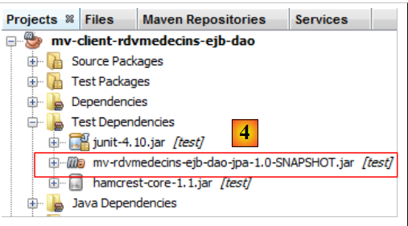 |
- en [4], la dépendance ajoutée.
Revenons à l'architecture client / serveur du test :
 |
A l'exécution, le client et le serveur communiquent via le réseau TCP-IP. Nous n'allons pas programmer ces échanges. Pour chaque serveur d'applications, il existe une bibliothèque à intégrer aux dépendances du client. Celle pour Glassfish s'appelle [gf-client]. Nous l'ajoutons :
 |
- en [1], on ajoute une dépendance,
- en [2], on donne les caractéristiques de l'artifact désiré,
- en [3], de très nombreuses dépendances sont ajoutées. Maven va les télécharger. Ceci peut prendre plusieurs minutes. Elles sont ensuites stockées dans le dépôt local de Maven.
Nous pouvons désormais créer le test JUnit :
 |
- en [2], on clique droit sur [Test Packages] pour créer un nouveau test JUnit,
 |
- en [3], on donne un nom à la classe de test ainsi qu'un paquetage pour celle-ci [4],
- en [5], on choisit le framework JUnit 4.x,
- en [6], la classe de test générée,
- en [7], les nouvelles dépendances du projet Maven.
Le fichier [pom.xml] est alors le suivant :
<project xmlns="http://maven.apache.org/POM/4.0.0" xmlns:xsi="http://www.w3.org/2001/XMLSchema-instance"
xsi:schemaLocation="http://maven.apache.org/POM/4.0.0 http://maven.apache.org/xsd/maven-4.0.0.xsd">
<modelVersion>4.0.0</modelVersion>
<groupId>istia.st</groupId>
<artifactId>mv-client-rdvmedecins-ejb-dao</artifactId>
<version>1.0-SNAPSHOT</version>
<packaging>jar</packaging>
<name>mv-client-rdvmedecins-ejb-dao</name>
<url>http://maven.apache.org</url>
<repositories>
<repository>
<url>http://download.eclipse.org/rt/eclipselink/maven.repo/</url>
<id>eclipselink</id>
<layout>default</layout>
<name>Repository for library Library[eclipselink]</name>
</repository>
<repository>
<url>http://repo1.maven.org/maven2/</url>
<id>junit_4</id>
<layout>default</layout>
<name>Repository for library Library[junit_4]</name>
</repository>
</repositories>
<properties>
<project.build.sourceEncoding>UTF-8</project.build.sourceEncoding>
</properties>
<dependencies>
<dependency>
<groupId>junit</groupId>
<artifactId>junit</artifactId>
<version>4.10</version>
<scope>test</scope>
</dependency>
<dependency>
<groupId>${project.groupId}</groupId>
<artifactId>mv-rdvmedecins-ejb-dao-jpa</artifactId>
<version>${project.version}</version>
<scope>test</scope>
</dependency>
<dependency>
<groupId>org.glassfish.appclient</groupId>
<artifactId>gf-client</artifactId>
<version>3.1.1</version>
<scope>test</scope>
</dependency>
</dependencies>
</project>
On notera :
- lignes 32-51, les dépendances du projet,
- lignes 13-26, deux dépôts Maven ont été définis, l'un pour EclipseLink (lignes 14-19), l'autre pour JUnit4 (lignes 20-25).
La classe de test sera la suivante :
package rdvmedecins.tests.dao;
import java.util.Date;
import java.util.List;
import javax.naming.InitialContext;
import javax.naming.NamingException;
import junit.framework.Assert;
import org.junit.BeforeClass;
import org.junit.Test;
import rdvmedecins.dao.IDaoRemote;
import rdvmedecins.jpa.Client;
import rdvmedecins.jpa.Creneau;
import rdvmedecins.jpa.Medecin;
import rdvmedecins.jpa.Rv;
public class JUnitTestDao {
// couche [dao] testée
private static IDaoRemote dao;
// date du jour
Date jour = new Date();
@BeforeClass
public static void init() throws NamingException {
// initialisation environnement JNDI
InitialContext initialContext = new InitialContext();
// instanciation couche dao
dao = (IDaoRemote) initialContext.lookup("rdvmedecins.dao");
}
@Test
public void test1() {
// affichage clients
List<Client> clients =dao.getAllClients();
display("Liste des clients :", clients);
// affichage médecins
List<Medecin> medecins =dao.getAllMedecins();
display("Liste des médecins :", medecins);
// affichage créneaux d'un médecin
Medecin medecin = medecins.get(0);
List<Creneau> creneaux = dao.getAllCreneaux(medecin);
display(String.format("Liste des créneaux du médecin %s", medecin), creneaux);
// liste des Rv d'un médecin, un jour donné
display(String.format("Liste des créneaux du médecin %s, le [%s]", medecin, jour), dao.getRvMedecinJour(medecin, jour));
// ajouter un RV
Rv rv = null;
Creneau creneau = creneaux.get(2);
Client client = clients.get(0);
System.out.println(String.format("Ajout d'un Rv le [%s] dans le créneau %s pour le client %s", jour, creneau, client));
rv = dao.ajouterRv(jour, creneau, client);
System.out.println("Rv ajouté");
display(String.format("Liste des Rv du médecin %s, le [%s]", medecin, jour), dao.getRvMedecinJour(medecin, jour));
// ajouter un RV dans le même créneau du même jour
// doit provoquer une exception
System.out.println(String.format("Ajout d'un Rv le [%s] dans le créneau %s pour le client %s", jour, creneau, client));
Boolean erreur = false;
try {
rv = dao.ajouterRv(jour, creneau, client);
System.out.println("Rv ajouté");
} catch (Exception ex) {
Throwable th = ex;
while (th != null) {
System.out.println(ex.getMessage());
th = th.getCause();
}
// on note l'erreur
erreur=true;
}
// on vérifie qu'il y a eu une erreur
Assert.assertTrue(erreur);
// liste des RV
display(String.format("Liste des Rv du médecin %s, le [%s]", medecin, jour), dao.getRvMedecinJour(medecin, jour));
// supprimer un RV
System.out.println("Suppression du Rv ajouté");
dao.supprimerRv(rv);
System.out.println("Rv supprimé");
display(String.format("Liste des Rv du médecin %s, le [%s]", medecin, jour), dao.getRvMedecinJour(medecin, jour));
}
// méthode utilitaire - affiche les éléments d'une collection
private static void display(String message, List elements) {
System.out.println(message);
for (Object element : elements) {
System.out.println(element);
}
}
}
- lignes 23-29 : la méthode taguée @BeforeClass est exécutée avant toutes les autres. Ici, on crée une référence sur l'interface distante de l'EJB [DaoJpa]. On se rappelle qu'on lui avait donné le nom JNDI "rdvmedecins.dao",
- lignes 34-35 : affichent la liste des clients,
- lignes 37-38 : affichent la liste des médecins,
- lignes 40-42 : affichent les créneaux horaires du premier médecin,
- ligne 44 : affichent les rendez-vous du premier médecin pour le jour de la ligne 21,
- lignes 46-51 : ajoutent un rendez-vous au premier médecin, pour son créneau n° 2 et le jour de la ligne 21,
- ligne 52 : affichent pour vérification les rendez-vous du premier médecin pour le jour de la ligne 21. Il doit y en avoir au moins un, celui qu'on vient d'ajouter,
- lignes 55-70 : on rajoute le même rendez-vous. Comme la table [RV] a une contrainte d'unicité, cet ajout doit provoquer une exception. On s'en assure ligne 70,
- ligne 72 : affichent pour vérification les rendez-vous du premier médecin pour le jour de la ligne 21. Celui qu'on voulait ajouter ne doit pas y être,
- lignes 74-76 : on supprime l'unique rendez-vous qui a été ajouté,
- ligne 77 : affichent pour vérification les rendez-vous du premier médecin pour le jour de la ligne 21. Celui qu'on vient de supprimer ne doit pas y être.
Ce test est un faux test JUnit. On n'y trouve qu'une assertion (ligne 70). C'est un test visuel avec les défauts qui vont avec.
Si tout va bien, les tests doivent passer :
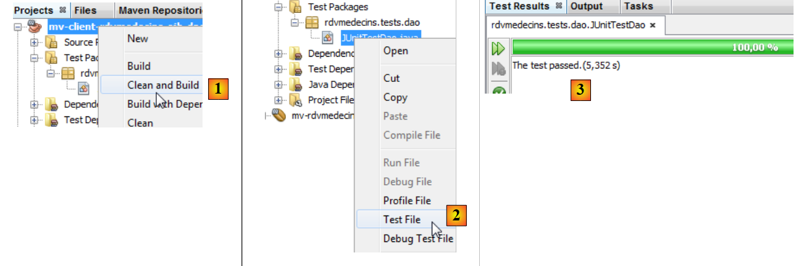 |
- en [1], on construit le projet de test,
- en [2], on exécute le test,
- en [3], le test a été réussi.
Regardons de plus près les affichages du test :
Le lecteur est invité à lire ces logs en même temps que le code qui les a produits. On va s'attarder à l'exception qui s'est produite à l'ajout d'un rendez-vous déjà existant, lignes 41-49. La pile d'exceptions est reproduite lignes 42-48. Elle est inattendue. Revenons au code de la méthode d'ajout d'un rendez-vous :
// ajout d'un Rv
// jour : jour du Rv
// creneau : créneau horaire du Rv
// client : client pour lequel est pris le Rv
public Rv ajouterRv(Date jour, Creneau creneau, Client client) {
try {
Rv rv = new Rv(null, jour);
rv.setClient(client);
rv.setCreneau(creneau);
System.out.println(String.format("avant persist : %s",rv));
em.persist(rv);
System.out.println(String.format("après persist : %s",rv));
return rv;
} catch (Throwable th) {
throw new RdvMedecinsException(th, 4);
}
}
Regardons les logs de Glassfish lors de l'ajout des deux rendez-vous :
- ligne 2 : avant le premier persist,
- ligne 3 : après le premier persist,
- ligne 4 : l'ordre INSERT qui va être exécuté. On notera qu'il n'a pas lieu en même temps que l'opération persist. Si c'était le cas, ce log serait apparu avant la ligne 2. L'opération INSERT a alors normalement lieu à la fin de la transaction dans laquelle s'exécute la méthode,
- ligne 6 : EclipseLink demande à MySQL quelle est la dernière clé primaire utilisée. Il va obtenir la clé primaire du rendez-vous ajouté. Cette valeur va alimenter le champ id de l'entité [Rv] persistée,
- lignes 7-8 : la requête SELECT qui va afficher les rendez-vous du médecin,
- lignes 9-10 : les affichages écran du second persist,
- lignes 11-12 : l'ordre INSERT qui va être exécuté. Il doit provoquer une exception. Celle-ci apparaît aux lignes 15-16 et elle est claire. Elle est lancée initialement par le pilote JDBC de MySQL pour violation de la contrainte d'unicité des rendez-vous. On en déduit qu'on devrait voir ces exceptions dans les logs du test JUnit. Or ce n'est pas le cas :
Rappelons l'architecture client / serveur du test :
 |
Lorsque l'EJB [DAO] lance une exception, celle-ci doit être sérialisée pour parvenir au client. C'est probablement cette opération qui a échoué pour une raison que je n'ai pas comprise. Comme notre application complète ne fonctionnera pas en client / serveur, nous pouvons ignorer ce problème.
Maintenant que l'EJB de la couche [DAO] est opérationnel, on peut passer à l'EJB de la couche [métier].
3.5. La couche [métier]
Revenons à l'architecture de l'application en cours de construction :
 |
Nous allons construire un nouveau projet Maven pour l'EJB [métier]. Comme on le voit ci-dessus, il aura une dépendance sur le projet Maven qui a été construit pour les couches [DAO] et [JPA].
3.5.1. Le projet Netbeans
Nous construisons un nouveau projet Maven de type EJB. Pour cela, il suffit de suivre la procédure déjà utilisée et décrite page 174.
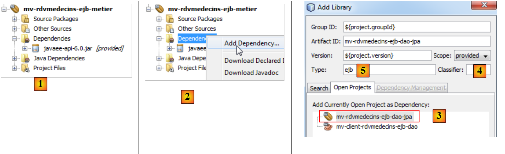 |
- en [1], le projet Maven de la couche [métier],
- en [2], on ajoute une dépendance,
- en [3], on choisit le projet Maven des couches [DAO] et [JPA],
- en [4], on choisit la portée [provided]. On rappelle que cela veut dire qu'on en a besoin pour la compilation mais pas pour l'exécution du projet. En effet, l'EJB de la couche [métier] va être déployé sur le serveur Glassfish avec l'EJB des couches [DAO] et [JPA]. Donc lorsqu'il s'exécutera, l'EJB des couches [DAO] et [JPA] sera déjà présent,
 |
- en [6], le nouveau projet avec sa dépendance.
Présentons maintenant les codes source de la couche [métier] :
 |
L'EJB [Metier] aura l'interface [IMetier] suivante :
package rdvmedecins.metier.service;
import java.util.Date;
import java.util.List;
import rdvmedecins.jpa.Client;
import rdvmedecins.jpa.Creneau;
import rdvmedecins.jpa.Medecin;
import rdvmedecins.jpa.Rv;
import rdvmedecins.metier.entites.AgendaMedecinJour;
public interface IMetier {
// couche dao
// liste des clients
public List<Client> getAllClients();
// liste des Médecins
public List<Medecin> getAllMedecins();
// liste des créneaux horaires d'un médecin
public List<Creneau> getAllCreneaux(Medecin medecin);
// liste des Rv d'un médecin, un jour donné
public List<Rv> getRvMedecinJour(Medecin medecin, Date jour);
// trouver un client identifié par son id
public Client getClientById(Long id);
// trouver un client idenbtifié par son id
public Medecin getMedecinById(Long id);
// trouver un Rv identifié par son id
public Rv getRvById(Long id);
// trouver un créneau horaire identifié par son id
public Creneau getCreneauById(Long id);
// ajouter un RV
public Rv ajouterRv(Date jour, Creneau creneau, Client client);
// supprimer un RV
public void supprimerRv(Rv rv);
// metier
public AgendaMedecinJour getAgendaMedecinJour(Medecin medecin, Date jour);
}
Pour comprendre cette interface, il faut se rappeler l'architecture du projet :
 |
Nous avons défini l'interface de la couche [DAO] (paragraphe 3.4.4) et avons indiqué que celle-ci répondait à des besoins de la couche [web], des besoins utilisateur. La couche [web] ne communique avec la couche [DAO] que via la couche [métier]. Ceci explique qu'on retrouve dans la couche [métier] toutes les méthodes de la couche [DAO]. Ces méthodes ne feront que déléguer la demande de la couche [web] à la couche [DAO]. Rien de plus.
Lors de l'étude de l'application, il apparaît un besoin : être capable d'afficher sur une page web l'agenda d'un médecin pour un jour donné afin de connaître les créneaux occupés et libres du jour. C'est typiquement le cas lorsque la secrétaire répond à une demande au téléphone. On lui demande un rendez-vous pour tel jour avec tel médecin. Pour répondre à ce besoin, la couche [métier] offre la méthode de la ligne 46.
// metier
public AgendaMedecinJour getAgendaMedecinJour(Medecin medecin, Date jour);
On peut se demander où placer cette méthode :
- on pourrait la placer dans la couche [DAO]. Cependant, cette méthode ne répond pas vraiment à un besoin d'accès aux données mais plutôt à un besoin métier,
- on pourrait la placer dans la couche [web]. Ce serait là une mauvaise idée. Car si on change la couche [web] en une couche [Swing], on perdra la méthode alors que le besoin est toujours présent.
La méthode reçoit en paramètres le médecin et le jour pour lequel on veut l'agenda des réservations. Elle rend un objet [AgendaMedecinJour] qui représente l'agenda du médecin et du jour :
package rdvmedecins.metier.entites;
import java.io.Serializable;
import java.text.SimpleDateFormat;
import java.util.Date;
import rdvmedecins.jpa.Medecin;
public class AgendaMedecinJour implements Serializable {
private static final long serialVersionUID = 1L;
// champs
private Medecin medecin;
private Date jour;
private CreneauMedecinJour[] creneauxMedecinJour;
// constructeurs
public AgendaMedecinJour() {
}
public AgendaMedecinJour(Medecin medecin, Date jour, CreneauMedecinJour[] creneauxMedecinJour) {
this.medecin = medecin;
this.jour = jour;
this.creneauxMedecinJour = creneauxMedecinJour;
}
public String toString() {
StringBuffer str = new StringBuffer("");
for (CreneauMedecinJour cr : creneauxMedecinJour) {
str.append(" ");
str.append(cr.toString());
}
return String.format("Agenda[%s,%s,%s]", medecin, new SimpleDateFormat("dd/MM/yyyy").format(jour), str.toString());
}
// getters et setters
...
}
- ligne 12 : le médecin dont c'est l'agenda,
- ligne 13 : le jour de l'agenda,
- ligne 14 : les créneaux horaires du médecin pour ce jour.
- la classe présente des constructeurs (lignes 17, 21) ainsi qu'une méthode toString adaptée (ligne 27).
La classe [CreneauMedecinJour] (ligne 14) est la suivante :
package rdvmedecins.metier.entites;
import java.io.Serializable;
import rdvmedecins.jpa.Creneau;
import rdvmedecins.jpa.Rv;
public class CreneauMedecinJour implements Serializable {
private static final long serialVersionUID = 1L;
// champs
private Creneau creneau;
private Rv rv;
// constructeurs
public CreneauMedecinJour() {
}
public CreneauMedecinJour(Creneau creneau, Rv rv) {
this.creneau=creneau;
this.rv=rv;
}
// toString
@Override
public String toString() {
return String.format("[%s %s]", creneau,rv);
}
// getters et setters
...
}
- ligne 12 : un créneau horaire du médecin,
- ligne 13 : le rendez-vous associé, null si le créneau est libre.
On voit ainsi que le champ creneauxMedecinJour de la ligne 14 de la classe [AgendaMedecinJour] nous permet d'avoir tous les créneaux horaires du médecin avec l'information " occupé " ou " libre " pour chacun d'eux. C'était le but de la nouvelle méthode [getAgendaMedecinJour] de l'interface [IMetier].
Notre Ejb [Metier] aura une interface locale et une interface distante qui se contenteront de dériver l'interface principale [IMetier] :
package rdvmedecins.metier.service;
import javax.ejb.Local;
@Local
public interface IMetierLocal extends IMetier{
}
package rdvmedecins.metier.service;
import javax.ejb.Remote;
@Remote
public interface IMetierRemote extends IMetier{
}
L'EJB [Metier] implémente ces interfaces de la façon suivante :
package rdvmedecins.metier.service;
import java.io.Serializable;
import java.util.Date;
import java.util.Hashtable;
import java.util.List;
import java.util.Map;
import javax.ejb.EJB;
import javax.ejb.Singleton;
import javax.ejb.TransactionAttribute;
import javax.ejb.TransactionAttributeType;
import rdvmedecins.dao.IDaoLocal;
import rdvmedecins.jpa.Client;
import rdvmedecins.jpa.Creneau;
import rdvmedecins.jpa.Medecin;
import rdvmedecins.jpa.Rv;
import rdvmedecins.metier.entites.AgendaMedecinJour;
import rdvmedecins.metier.entites.CreneauMedecinJour;
@Singleton
@TransactionAttribute(TransactionAttributeType.REQUIRED)
public class Metier implements IMetierLocal, IMetierRemote, Serializable {
// couche dao
@EJB
private IDaoLocal dao;
public Metier() {
}
@Override
public List<Client> getAllClients() {
return dao.getAllClients();
}
@Override
public List<Medecin> getAllMedecins() {
return dao.getAllMedecins();
}
@Override
public List<Creneau> getAllCreneaux(Medecin medecin) {
return dao.getAllCreneaux(medecin);
}
@Override
public List<Rv> getRvMedecinJour(Medecin medecin, Date jour) {
return dao.getRvMedecinJour(medecin, jour);
}
@Override
public Client getClientById(Long id) {
return dao.getClientById(id);
}
@Override
public Medecin getMedecinById(Long id) {
return dao.getMedecinById(id);
}
@Override
public Rv getRvById(Long id) {
return dao.getRvById(id);
}
@Override
public Creneau getCreneauById(Long id) {
return dao.getCreneauById(id);
}
@Override
public Rv ajouterRv(Date jour, Creneau creneau, Client client) {
return dao.ajouterRv(jour, creneau, client);
}
@Override
public void supprimerRv(Rv rv) {
dao.supprimerRv(rv);
}
@Override
public AgendaMedecinJour getAgendaMedecinJour(Medecin medecin, Date jour) {
// liste des créneaux horaires du médecin
List<Creneau> creneauxHoraires = dao.getAllCreneaux(medecin);
// liste des réservations de ce même médecin pour ce même jour
List<Rv> reservations = dao.getRvMedecinJour(medecin, jour);
// on crée un dictionnaire à partir des Rv pris
Map<Long, Rv> hReservations = new Hashtable<Long, Rv>();
for (Rv resa : reservations) {
hReservations.put(resa.getCreneau().getId(), resa);
}
// on crée l'agenda pour le jour demandé
AgendaMedecinJour agenda = new AgendaMedecinJour();
// le médecin
agenda.setMedecin(medecin);
// le jour
agenda.setJour(jour);
// les créneaux de réservation
CreneauMedecinJour[] creneauxMedecinJour = new CreneauMedecinJour[creneauxHoraires.size()];
agenda.setCreneauxMedecinJour(creneauxMedecinJour);
// remplissage des créneaux de réservation
for (int i = 0; i < creneauxHoraires.size(); i++) {
// ligne i agenda
creneauxMedecinJour[i] = new CreneauMedecinJour();
// id du créneau
creneauxMedecinJour[i].setCreneau(creneauxHoraires.get(i));
// le créneau est-il libre ou réservé ?
if (hReservations.containsKey(creneauxHoraires.get(i).getId())) {
// le créneau est occupé - on note la resa
Rv resa = hReservations.get(creneauxHoraires.get(i).getId());
creneauxMedecinJour[i].setRv(resa);
}
}
// on rend le résultat
return agenda;
}
}
- ligne 22, la classe [Metier] est un EJB singleton,
- ligne 23, chaque méthode de l'EJB se déroule au sein d'une transaction. Cela veut dire que la transaction démarre au début de la méthode, dans la couche [métier]. Celle-ci va appeler des méthodes de la couche [DAO]. Celles-ci se dérouleront au sein de la même transaction,
- ligne 24, l'EJB implémente ses interfaces locale et distante et est de plus sérialisable,
- ligne 27 : une référence sur l'EJB de la couche [DAO],
- ligne 29 : celle-ci sera injectée par le conteneur EJB du serveur Glassfish, grâce à l'annotation @EJB. Donc lorsque les méthodes de la classe [Metier] s'exécutent, la référence sur l'EJB de la couche [DAO] a été initialisée,
- lignes 33-81 : cette référence est utilisée pour déléguer à la couche [DAO] l'appel fait à la couche [métier],
- ligne 84 : la méthode getAgendaMedecinJour qui permet d'avoir l'agenda d'un médecin pour un jour donné. Nous laissons le lecteur suivre les commentaires.
3.5.2. Déploiement de la couche [métier]
La couche [métier] a une dépendance sur la couche [DAO]. Chaque couche a été implémentée avec un EJB. Pour tester l'EJB [métier], il nous faut déployer les deux EJB. Pour cela, nous avons besoin d'un projet d'entreprise.
 |
- [1], on crée un nouveau projet,
- de type Maven [2] et Application d'entreprise [3],
- on lui donne un nom [4]. Le suffixe ear lui sera automatiquement ajouté,
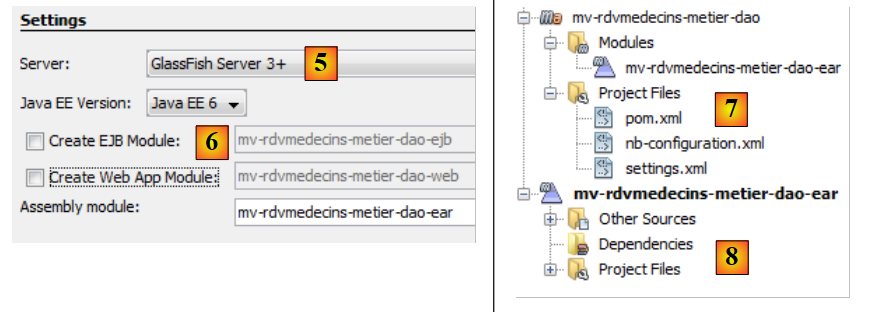 |
- en [5], on choisit le serveur Glassfish et Java EE 6,
- en [6], une application d'entreprise contient des modules, en général des modules EJB et des modules web. Ici, l'application d'entreprise va contenir les modules des deux EJB que nous avons construits. Comme ces modules existent, on ne coche pas les cases,
- en [7,8], deux projets on été créés. [8] est le projet d'entreprise que nous allons utiliser. [7] est un projet dont j'ignore le rôle. Je n'ai pas eu à l'utiliser et n'ayant pas approfondi Maven, je ne sais pas à quoi il peut servir. Donc nous l'ignorerons.
Maintenant que le projet d'entreprise est créé, nous pouvons lui définir ses modules.
 |
- en [1], on crée une nouvelle dépendance,
- en [2], on choisit le projet de l'EJB [DAO],
- en [3], on déclare que c'est un EJB. Ne pas laisser le type vide car dans ce cas c'est le type jar qui sera utilisé et ici ce type ne convient pas,
- en [4], on utilise la portée [compile],
- en [5], le projet avec sa nouvelle dépendance,
 |
- en [6, 7, 8], on recommence pour ajouter l'EJB de la couche [métier],
- en [9], les deux dépendances,
- en [10], on construit le projet,
 |
- en [11], on l'exécute,
- en [12], dans l'onglet [Services], on voit que le projet a été déployé sur le serveur Glassfish. Cela veut dire que les deux Ejb sont désormais présents sur le serveur.
Dans les logs du serveur Glassfish, on trouve des informations sur le déploiement des deux EJB :
 |
- en [1], l'onglet des logs de Glassfish.
On y trouve les logs suivants :
- lignes 1-5 : les entités JPA ont été reconnues,
- ligne 7 : indique que la construction de l'unité de persistance [dbrdvmedecins2-PU] a réussi et que la connexion à la base de données associée a été faite,
- ligne 8 : les noms portables des interfaces distante et locale de l'EJB [DaoJpa]. portable veut dire reconnu par tous les serveurs d'application,
- ligne 9 : la même chose mais avec des noms propriétaires à Glassfish,
- lignes 10-11 : même chose pour l'EJB [Metier].
Nous retiendrons le nom portable de l'interface distante de l'EJB [Metier] :
java:global/istia.st_mv-rdvmedecins-metier-dao-ear_ear_1.0-SNAPSHOT/mv-rdvmedecins-ejb-metier-1.0-SNAPSHOT/Metier!rdvmedecins.metier.service.IMetierRemote
Nous en aurons besoin lors des tests de la couche [métier].
3.5.3. Test de la couche [métier]
Comme nous l'avons fait pour la couche [DAO], nous allons tester la couche [métier] dans le cadre d'une application client / serveur :
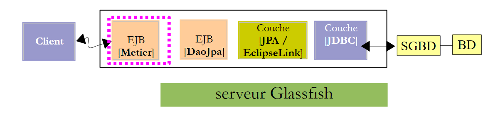 |
Le client va tester l'interface distante de l'EJB [Metier] déployé sur le serveur Glassfish.
Nous commençons par créer un nouveau projet Maven. Pour cela, nous suivons la démarche utilisée pour créer le projet de test de la couche [dao] (cf paragraphe 3.4.7), la création du test JUnit exclue. Le projet ainsi créé est le suivant
 |
- en [1], le projet créé avec ses dépendances : vis à vis de l'EJB de la couche [dao], de celui de l'EJB de la couche [métier], de la bibliothèque [gf-client].
A ce point, le fichier [pom.xml] du projet est le suivant :
<project xmlns="http://maven.apache.org/POM/4.0.0" xmlns:xsi="http://www.w3.org/2001/XMLSchema-instance"
xsi:schemaLocation="http://maven.apache.org/POM/4.0.0 http://maven.apache.org/xsd/maven-4.0.0.xsd">
<modelVersion>4.0.0</modelVersion>
<groupId>istia.st</groupId>
<artifactId>mv-client-rdvmedecins-ejb-metier</artifactId>
<version>1.0-SNAPSHOT</version>
<packaging>jar</packaging>
<name>mv-client-rdvmedecins-ejb-metier</name>
<url>http://maven.apache.org</url>
<properties>
<project.build.sourceEncoding>UTF-8</project.build.sourceEncoding>
</properties>
<dependencies>
<dependency>
<groupId>org.glassfish.appclient</groupId>
<artifactId>gf-client</artifactId>
<version>3.1.1</version>
</dependency>
<dependency>
<groupId>${project.groupId}</groupId>
<artifactId>mv-rdvmedecins-ejb-dao-jpa</artifactId>
<version>${project.version}</version>
</dependency>
<dependency>
<groupId>${project.groupId}</groupId>
<artifactId>mv-rdvmedecins-ejb-metier</artifactId>
<version>${project.version}</version>
</dependency>
</dependencies>
</project>
On s'assurera de bien avoir les dépendances décrites lignes 17-33. Le test sera une simple classe console :
 |
Le code de la classe [ClientRdvMedecinsMetier] est le suivant :
package istia.st.client;
import java.util.Date;
import java.util.List;
import javax.naming.InitialContext;
import rdvmedecins.jpa.Client;
import rdvmedecins.jpa.Creneau;
import rdvmedecins.jpa.Medecin;
import rdvmedecins.jpa.Rv;
import rdvmedecins.metier.entites.AgendaMedecinJour;
import rdvmedecins.metier.service.IMetierRemote;
public class ClientRdvMedecinsMetier {
// le nom de l'interface distante de l'EJB [Metier]
private static String IDaoRemoteName = "java:global/istia.st_mv-rdvmedecins-metier-dao-ear_ear_1.0-SNAPSHOT/mv-rdvmedecins-ejb-metier-1.0-SNAPSHOT/Metier!rdvmedecins.metier.service.IMetierRemote";
// date du jour
private static Date jour = new Date();
public static void main(String[] args) {
try {
// contexte JNDI du serveur Glassfish
InitialContext initialContext = new InitialContext();
// référence sur couche [metier] distante
IMetierRemote metier = (IMetierRemote) initialContext.lookup(IDaoRemoteName);
// affichage clients
List<Client> clients = metier.getAllClients();
display("Liste des clients :", clients);
// affichage médecins
List<Medecin> medecins = metier.getAllMedecins();
display("Liste des médecins :", medecins);
// affichage créneaux d'un médecin
Medecin medecin = medecins.get(0);
List<Creneau> creneaux = metier.getAllCreneaux(medecin);
display(String.format("Liste des créneaux du médecin %s", medecin), creneaux);
// liste des Rv d'un médecin, un jour donné
display(String.format("Liste des rendez-vous du médecin %s, le [%s]", medecin, jour), metier.getRvMedecinJour(medecin, jour));
// affichage agenda
AgendaMedecinJour agenda = metier.getAgendaMedecinJour(medecin, jour);
System.out.println(agenda);
// ajouter un RV
Rv rv = null;
Creneau creneau = creneaux.get(2);
Client client = clients.get(0);
System.out.println(String.format("Ajout d'un Rv le [%s] dans le créneau %s pour le client %s", jour, creneau, client));
rv = metier.ajouterRv(jour, creneau, client);
System.out.println("Rv ajouté");
display(String.format("Liste des Rv du médecin %s, le [%s]", medecin, jour), metier.getRvMedecinJour(medecin, jour));
// affichage agenda
agenda = metier.getAgendaMedecinJour(medecin, jour);
System.out.println(agenda);
// supprimer un RV
System.out.println("Suppression du Rv ajouté");
metier.supprimerRv(rv);
System.out.println("Rv supprimé");
display(String.format("Liste des Rv du médecin %s, le [%s]", medecin, jour), metier.getRvMedecinJour(medecin, jour));
// affichage agenda
agenda = metier.getAgendaMedecinJour(medecin, jour);
System.out.println(agenda);
} catch (Throwable ex) {
System.out.println("Erreur...");
while (ex != null) {
System.out.println(String.format("%s : %s", ex.getClass().getName(), ex.getMessage()));
ex = ex.getCause();
}
}
}
// méthode utilitaire - affiche les éléments d'une collection
private static void display(String message, List elements) {
System.out.println(message);
for (Object element : elements) {
System.out.println(element);
}
}
}
- ligne 18 : le nom portable de l'interface distante de l'Ejb [Metier] a été pris dans les logs de Glassfish,
- lignes 24-27 : on obtient une référence sur l'interface distante de l'Ejb [Metier],
- lignes 29-30 : affichent les clients,
- lignes 32-33 : affichent les médecins,
- lignes 35-37 : affichent les créneaux d'un médecin,
- ligne 39 : affichent les rendez-vous d'un médecin un jour donné,
- lignes 41-42 : l'agenda de ce même médecin pour le même jour,
- lignes 44-49 : on ajoute un rendez-vous,
- ligne 50 : on affiche les rendez-vous du médecin. Il doit y en avoir un de plus,
- lignes 52-53 : on affiche l'agenda du médecin. On doit voir le rendez-vous ajouté,
- lignes 55-57 : on supprime le rendez-vous qu'on vient d'ajouter,
- ligne 58 : cela doit se refléter dans la liste des rendez-vous du médecin,
- lignes 60-61 : et dans son agenda.
On exécute le test :
 |  |
Les affichages écran obtenus sont les suivants :
Liste des clients :
Client[1,Mr,Jules,MARTIN]
Client[2,Mme,Christine,GERMAN]
Client[3,Mr,Jules,JACQUARD]
Client[4,Melle,Brigitte,BISTROU]
Liste des médecins :
Médecin[1,Mme,Marie,PELISSIER]
Médecin[2,Mr,Jacques,BROMARD]
Médecin[3,Mr,Philippe,JANDOT]
Médecin[4,Melle,Justine,JACQUEMOT]
Liste des créneaux du médecin Médecin[1,Mme,Marie,PELISSIER]
Creneau [1, 1, 8:0, 8:20,Médecin[1,Mme,Marie,PELISSIER]]
Creneau [2, 1, 8:20, 8:40,Médecin[1,Mme,Marie,PELISSIER]]
Creneau [3, 1, 8:40, 9:0,Médecin[1,Mme,Marie,PELISSIER]]
Creneau [4, 1, 9:0, 9:20,Médecin[1,Mme,Marie,PELISSIER]]
Creneau [5, 1, 9:20, 9:40,Médecin[1,Mme,Marie,PELISSIER]]
Creneau [6, 1, 9:40, 10:0,Médecin[1,Mme,Marie,PELISSIER]]
Creneau [7, 1, 10:0, 10:20,Médecin[1,Mme,Marie,PELISSIER]]
Creneau [8, 1, 10:20, 10:40,Médecin[1,Mme,Marie,PELISSIER]]
Creneau [9, 1, 10:40, 11:0,Médecin[1,Mme,Marie,PELISSIER]]
Creneau [10, 1, 11:0, 11:20,Médecin[1,Mme,Marie,PELISSIER]]
Creneau [11, 1, 11:20, 11:40,Médecin[1,Mme,Marie,PELISSIER]]
Creneau [12, 1, 11:40, 12:0,Médecin[1,Mme,Marie,PELISSIER]]
Creneau [13, 1, 14:0, 14:20,Médecin[1,Mme,Marie,PELISSIER]]
Creneau [14, 1, 14:20, 14:40,Médecin[1,Mme,Marie,PELISSIER]]
Creneau [15, 1, 14:40, 15:0,Médecin[1,Mme,Marie,PELISSIER]]
Creneau [16, 1, 15:0, 15:20,Médecin[1,Mme,Marie,PELISSIER]]
Creneau [17, 1, 15:20, 15:40,Médecin[1,Mme,Marie,PELISSIER]]
Creneau [18, 1, 15:40, 16:0,Médecin[1,Mme,Marie,PELISSIER]]
Creneau [19, 1, 16:0, 16:20,Médecin[1,Mme,Marie,PELISSIER]]
Creneau [20, 1, 16:20, 16:40,Médecin[1,Mme,Marie,PELISSIER]]
Creneau [21, 1, 16:40, 17:0,Médecin[1,Mme,Marie,PELISSIER]]
Creneau [22, 1, 17:0, 17:20,Médecin[1,Mme,Marie,PELISSIER]]
Creneau [23, 1, 17:20, 17:40,Médecin[1,Mme,Marie,PELISSIER]]
Creneau [24, 1, 17:40, 18:0,Médecin[1,Mme,Marie,PELISSIER]]
Liste des créneaux du médecin Médecin[1,Mme,Marie,PELISSIER], le [Wed May 23 16:25:26 CEST 2012]
Agenda[Médecin[1,Mme,Marie,PELISSIER],23/05/2012, [Creneau [1, 1, 8:0, 8:20,Médecin[1,Mme,Marie,PELISSIER]] null] [Creneau [2, 1, 8:20, 8:40,Médecin[1,Mme,Marie,PELISSIER]] null] [Creneau [3, 1, 8:40, 9:0,Médecin[1,Mme,Marie,PELISSIER]] null] [Creneau [4, 1, 9:0, 9:20,Médecin[1,Mme,Marie,PELISSIER]] null] [Creneau [5, 1, 9:20, 9:40,Médecin[1,Mme,Marie,PELISSIER]] null] [Creneau [6, 1, 9:40, 10:0,Médecin[1,Mme,Marie,PELISSIER]] null] [Creneau [7, 1, 10:0, 10:20,Médecin[1,Mme,Marie,PELISSIER]] null] [Creneau [8, 1, 10:20, 10:40,Médecin[1,Mme,Marie,PELISSIER]] null] [Creneau [9, 1, 10:40, 11:0,Médecin[1,Mme,Marie,PELISSIER]] null] [Creneau [10, 1, 11:0, 11:20,Médecin[1,Mme,Marie,PELISSIER]] null] [Creneau [11, 1, 11:20, 11:40,Médecin[1,Mme,Marie,PELISSIER]] null] [Creneau [12, 1, 11:40, 12:0,Médecin[1,Mme,Marie,PELISSIER]] null] [Creneau [13, 1, 14:0, 14:20,Médecin[1,Mme,Marie,PELISSIER]] null] [Creneau [14, 1, 14:20, 14:40,Médecin[1,Mme,Marie,PELISSIER]] null] [Creneau [15, 1, 14:40, 15:0,Médecin[1,Mme,Marie,PELISSIER]] null] [Creneau [16, 1, 15:0, 15:20,Médecin[1,Mme,Marie,PELISSIER]] null] [Creneau [17, 1, 15:20, 15:40,Médecin[1,Mme,Marie,PELISSIER]] null] [Creneau [18, 1, 15:40, 16:0,Médecin[1,Mme,Marie,PELISSIER]] null] [Creneau [19, 1, 16:0, 16:20,Médecin[1,Mme,Marie,PELISSIER]] null] [Creneau [20, 1, 16:20, 16:40,Médecin[1,Mme,Marie,PELISSIER]] null] [Creneau [21, 1, 16:40, 17:0,Médecin[1,Mme,Marie,PELISSIER]] null] [Creneau [22, 1, 17:0, 17:20,Médecin[1,Mme,Marie,PELISSIER]] null] [Creneau [23, 1, 17:20, 17:40,Médecin[1,Mme,Marie,PELISSIER]] null] [Creneau [24, 1, 17:40, 18:0,Médecin[1,Mme,Marie,PELISSIER]] null]]
Ajout d'un Rv le [Wed May 23 16:25:26 CEST 2012] dans le créneau Creneau [3, 1, 8:40, 9:0,Médecin[1,Mme,Marie,PELISSIER]] pour le client Client[1,Mr,Jules,MARTIN]
Rv ajouté
Liste des Rv du médecin Médecin[1,Mme,Marie,PELISSIER], le [Wed May 23 16:25:26 CEST 2012]
Rv[252, Creneau [3, 1, 8:40, 9:0,Médecin[1,Mme,Marie,PELISSIER]], Client[1,Mr,Jules,MARTIN]]
Agenda[Médecin[1,Mme,Marie,PELISSIER],23/05/2012, [Creneau [1, 1, 8:0, 8:20,Médecin[1,Mme,Marie,PELISSIER]] null] [Creneau [2, 1, 8:20, 8:40,Médecin[1,Mme,Marie,PELISSIER]] null] [Creneau [3, 1, 8:40, 9:0,Médecin[1,Mme,Marie,PELISSIER]] Rv[252, Creneau [3, 1, 8:40, 9:0,Médecin[1,Mme,Marie,PELISSIER]], Client[1,Mr,Jules,MARTIN]]] [Creneau [4, 1, 9:0, 9:20,Médecin[1,Mme,Marie,PELISSIER]] null] [Creneau [5, 1, 9:20, 9:40,Médecin[1,Mme,Marie,PELISSIER]] null] [Creneau [6, 1, 9:40, 10:0,Médecin[1,Mme,Marie,PELISSIER]] null] [Creneau [7, 1, 10:0, 10:20,Médecin[1,Mme,Marie,PELISSIER]] null] [Creneau [8, 1, 10:20, 10:40,Médecin[1,Mme,Marie,PELISSIER]] null] [Creneau [9, 1, 10:40, 11:0,Médecin[1,Mme,Marie,PELISSIER]] null] [Creneau [10, 1, 11:0, 11:20,Médecin[1,Mme,Marie,PELISSIER]] null] [Creneau [11, 1, 11:20, 11:40,Médecin[1,Mme,Marie,PELISSIER]] null] [Creneau [12, 1, 11:40, 12:0,Médecin[1,Mme,Marie,PELISSIER]] null] [Creneau [13, 1, 14:0, 14:20,Médecin[1,Mme,Marie,PELISSIER]] null] [Creneau [14, 1, 14:20, 14:40,Médecin[1,Mme,Marie,PELISSIER]] null] [Creneau [15, 1, 14:40, 15:0,Médecin[1,Mme,Marie,PELISSIER]] null] [Creneau [16, 1, 15:0, 15:20,Médecin[1,Mme,Marie,PELISSIER]] null] [Creneau [17, 1, 15:20, 15:40,Médecin[1,Mme,Marie,PELISSIER]] null] [Creneau [18, 1, 15:40, 16:0,Médecin[1,Mme,Marie,PELISSIER]] null] [Creneau [19, 1, 16:0, 16:20,Médecin[1,Mme,Marie,PELISSIER]] null] [Creneau [20, 1, 16:20, 16:40,Médecin[1,Mme,Marie,PELISSIER]] null] [Creneau [21, 1, 16:40, 17:0,Médecin[1,Mme,Marie,PELISSIER]] null] [Creneau [22, 1, 17:0, 17:20,Médecin[1,Mme,Marie,PELISSIER]] null] [Creneau [23, 1, 17:20, 17:40,Médecin[1,Mme,Marie,PELISSIER]] null] [Creneau [24, 1, 17:40, 18:0,Médecin[1,Mme,Marie,PELISSIER]] null]]
Suppression du Rv ajouté
Rv supprimé
Liste des Rv du médecin Médecin[1,Mme,Marie,PELISSIER], le [Wed May 23 16:25:26 CEST 2012]
Agenda[Médecin[1,Mme,Marie,PELISSIER],23/05/2012, [Creneau [1, 1, 8:0, 8:20,Médecin[1,Mme,Marie,PELISSIER]] null] [Creneau [2, 1, 8:20, 8:40,Médecin[1,Mme,Marie,PELISSIER]] null] [Creneau [3, 1, 8:40, 9:0,Médecin[1,Mme,Marie,PELISSIER]] null] [Creneau [4, 1, 9:0, 9:20,Médecin[1,Mme,Marie,PELISSIER]] null] [Creneau [5, 1, 9:20, 9:40,Médecin[1,Mme,Marie,PELISSIER]] null] [Creneau [6, 1, 9:40, 10:0,Médecin[1,Mme,Marie,PELISSIER]] null] [Creneau [7, 1, 10:0, 10:20,Médecin[1,Mme,Marie,PELISSIER]] null] [Creneau [8, 1, 10:20, 10:40,Médecin[1,Mme,Marie,PELISSIER]] null] [Creneau [9, 1, 10:40, 11:0,Médecin[1,Mme,Marie,PELISSIER]] null] [Creneau [10, 1, 11:0, 11:20,Médecin[1,Mme,Marie,PELISSIER]] null] [Creneau [11, 1, 11:20, 11:40,Médecin[1,Mme,Marie,PELISSIER]] null] [Creneau [12, 1, 11:40, 12:0,Médecin[1,Mme,Marie,PELISSIER]] null] [Creneau [13, 1, 14:0, 14:20,Médecin[1,Mme,Marie,PELISSIER]] null] [Creneau [14, 1, 14:20, 14:40,Médecin[1,Mme,Marie,PELISSIER]] null] [Creneau [15, 1, 14:40, 15:0,Médecin[1,Mme,Marie,PELISSIER]] null] [Creneau [16, 1, 15:0, 15:20,Médecin[1,Mme,Marie,PELISSIER]] null] [Creneau [17, 1, 15:20, 15:40,Médecin[1,Mme,Marie,PELISSIER]] null] [Creneau [18, 1, 15:40, 16:0,Médecin[1,Mme,Marie,PELISSIER]] null] [Creneau [19, 1, 16:0, 16:20,Médecin[1,Mme,Marie,PELISSIER]] null] [Creneau [20, 1, 16:20, 16:40,Médecin[1,Mme,Marie,PELISSIER]] null] [Creneau [21, 1, 16:40, 17:0,Médecin[1,Mme,Marie,PELISSIER]] null] [Creneau [22, 1, 17:0, 17:20,Médecin[1,Mme,Marie,PELISSIER]] null] [Creneau [23, 1, 17:20, 17:40,Médecin[1,Mme,Marie,PELISSIER]] null] [Creneau [24, 1, 17:40, 18:0,Médecin[1,Mme,Marie,PELISSIER]] null]]
- ligne 37 : l'agenda de Mme PELISSIER, le 23 mai 2012. Aucun créneau n'est réservé,
- ligne 39 : ajout d'un rendez-vous,
- ligne 42 : le nouvel agenda de Mme PELISSIER. Un créneau est désormais réservé à Mr MARTIN,
- ligne 44 : le rendez-vous a été supprimé,
- ligne 46 : l'agenda de Mme PELISSIER montre qu'aucun créneau n'est réservé.
Nous considérons désormais que les couches [DAO] et [métier] sont opérationnelles. Il nous reste à écrire la couche [web] avec le framework JSF. Pour cela, nous allons utiliser les connaissances acquises au début de ce document.
3.6. La couche [web]
Revenons à l'architecture en cours de construction :
 |
Nous allons construire la dernière couche, celle de la couche [web].
3.6.1. Le projet Netbeans
Nous construisons un projet Maven :
 |
- en [1], on crée un nouveau projet,
- en [2, 3], un projet Maven de type [Web Application],
- en [4], on lui donne un nom,
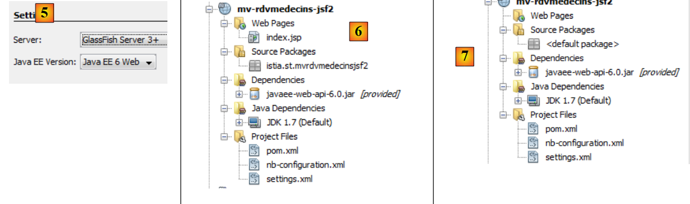 |
- en [5], on choisit le serveur Glassfish et Java EE 6 Web,
- en [6], le projet ainsi créé,
- en [7], le projet une fois éliminés la page [index.jsp] et le paquetage présent dans [Source Packages],
 |
- en [8, 9], dans les propriétés du projet, on ajoute un framework,
- en [10], on choisit Java Server Faces,
 |
- en [11], la configuration de Java Server Faces. On laisse les valeurs par défaut. On note que c'est JSF 2 qui est utilisé,
- en [12], le projet est alors modifié en deux points : un fichier [web.xml] est généré ainsi qu'une page [index.html].
Le fichier [web.xml] est le suivant :
<?xml version="1.0" encoding="UTF-8"?>
<web-app version="3.0" xmlns="http://java.sun.com/xml/ns/javaee" xmlns:xsi="http://www.w3.org/2001/XMLSchema-instance" xsi:schemaLocation="http://java.sun.com/xml/ns/javaee http://java.sun.com/xml/ns/javaee/web-app_3_0.xsd">
<context-param>
<param-name>javax.faces.PROJECT_STAGE</param-name>
<param-value>Development</param-value>
</context-param>
<servlet>
<servlet-name>Faces Servlet</servlet-name>
<servlet-class>javax.faces.webapp.FacesServlet</servlet-class>
<load-on-startup>1</load-on-startup>
</servlet>
<servlet-mapping>
<servlet-name>Faces Servlet</servlet-name>
<url-pattern>/faces/*</url-pattern>
</servlet-mapping>
<session-config>
<session-timeout>
30
</session-timeout>
</session-config>
<welcome-file-list>
<welcome-file>faces/index.xhtml</welcome-file>
</welcome-file-list>
</web-app>
Nous avons déjà rencontré ce fichier.
- lignes 7-11 : définissent la servlet qui va traiter toutes les requêtes faites à l'application. C'est la servlet de JSF,
- lignes 12-15 : définissent les URL traitées par cette servlet. Ce sont les URL de la forme /faces/*,
- lignes 21-23 : définissent la page [index.xhtml] comme page d'accueil.
Cette page est la suivante :
<?xml version='1.0' encoding='UTF-8' ?>
<!DOCTYPE html PUBLIC "-//W3C//DTD XHTML 1.0 Transitional//EN" "http://www.w3.org/TR/xhtml1/DTD/xhtml1-transitional.dtd">
<html xmlns="http://www.w3.org/1999/xhtml"
xmlns:h="http://java.sun.com/jsf/html">
<h:head>
<title>Facelet Title</title>
</h:head>
<h:body>
Hello from Facelets
</h:body>
</html>
Nous l'avons déjà rencontrée. Nous pouvons exécuter ce projet :
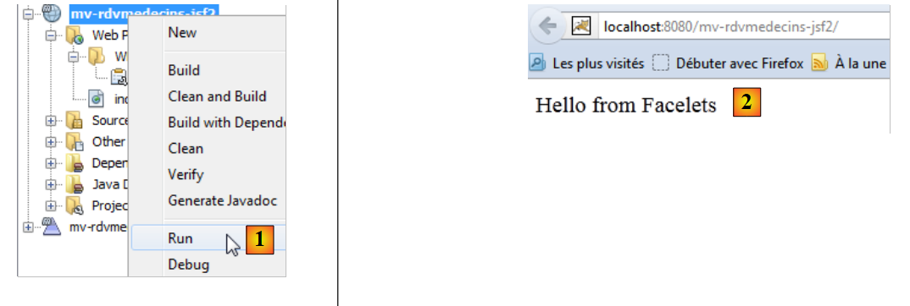 |
- en [1], nous exécutons le projet et nous obtenons le résultat [2] dans le navigateur.
Nous présentons maintenant le projet complet pour en détailler ensuite les différents éléments.
 |
- en [1], les pages XHTML du projet,
- en [2], les codes Java,
- en [3], les fichiers de messages car l'application est internationalisée,
 |
- en [4], les dépendances du projet.
3.6.2. Les dépendances du projet
Revenons à l'architecture du projet :
 |
La couche JSF s'appuie sur les couches [métier], [DAO] et [JPA]. Ces trois couches sont encapsulées dans les deux projets Maven que nous avons construits, ce qui explique les dépendances du projet [4]. Simplement, montrons comment ces dépendances sont ajoutées :
 |
- en [1], on mettra ejb pour indiquer que la dépendance est sur un projet EJB,
- en [2], on mettra [provided]. En effet, le projet web va être déployé en même temps que les deux projets EJB. Donc il n'a pas besoin d'embarquer les jars des EJB.
3.6.3. La configuration du projet
La configuration du projet est celle des projets JSF que nous avons étudiée au début de ce document. Nous listons les fichiers de configuration sans les réexpliquer.
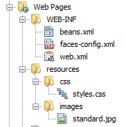 |  |
[web.xml] : configure l'application web.
<?xml version="1.0" encoding="UTF-8"?>
<web-app version="3.0" xmlns="http://java.sun.com/xml/ns/javaee" xmlns:xsi="http://www.w3.org/2001/XMLSchema-instance" xsi:schemaLocation="http://java.sun.com/xml/ns/javaee http://java.sun.com/xml/ns/javaee/web-app_3_0.xsd">
<context-param>
<param-name>javax.faces.PROJECT_STAGE</param-name>
<param-value>Production</param-value>
</context-param>
<context-param>
<param-name>javax.faces.FACELETS_SKIP_COMMENTS</param-name>
<param-value>true</param-value>
</context-param>
<servlet>
<servlet-name>Faces Servlet</servlet-name>
<servlet-class>javax.faces.webapp.FacesServlet</servlet-class>
<load-on-startup>1</load-on-startup>
</servlet>
<servlet-mapping>
<servlet-name>Faces Servlet</servlet-name>
<url-pattern>/faces/*</url-pattern>
</servlet-mapping>
<session-config>
<session-timeout>
30
</session-timeout>
</session-config>
<welcome-file-list>
<welcome-file>faces/index.xhtml</welcome-file>
</welcome-file-list>
<error-page>
<error-code>500</error-code>
<location>/faces/exception.xhtml</location>
</error-page>
<error-page>
<exception-type>Exception</exception-type>
<location>/faces/exception.xhtml</location>
</error-page>
</web-app>
On notera, ligne 26 que la page [index.xhtml] est la page d'accueil de l'application.
[faces-config.xml] : configure l'application JSF
<?xml version='1.0' encoding='UTF-8'?>
<!-- =========== FULL CONFIGURATION FILE ================================== -->
<faces-config version="2.0"
xmlns="http://java.sun.com/xml/ns/javaee"
xmlns:xsi="http://www.w3.org/2001/XMLSchema-instance"
xsi:schemaLocation="http://java.sun.com/xml/ns/javaee http://java.sun.com/xml/ns/javaee/web-facesconfig_2_0.xsd">
<application>
<resource-bundle>
<base-name>
messages
</base-name>
<var>msg</var>
</resource-bundle>
<message-bundle>messages</message-bundle>
</application>
</faces-config>
[beans.xml] : vide mais nécessaire pour l'annotation @Named
<?xml version="1.0" encoding="UTF-8"?>
<beans xmlns="http://java.sun.com/xml/ns/javaee"
xmlns:xsi="http://www.w3.org/2001/XMLSchema-instance"
xsi:schemaLocation="http://java.sun.com/xml/ns/javaee http://java.sun.com/xml/ns/javaee/beans_1_0.xsd">
</beans>
[styles.css] : la feuille de style de l'application
.reservationsHeaders {
text-align: center;
font-style: italic;
color: Snow;
background: Teal;
}
.creneau {
height: 25px;
text-align: center;
background: MediumTurquoise;
}
.client {
text-align: left;
background: PowderBlue;
}
.action {
width: 6em;
text-align: left;
color: Black;
background: MediumTurquoise;
}
.erreursHeaders {
background: Teal;
background-color: #ff6633;
color: Snow;
font-style: italic;
text-align: center
}
.erreurClasse {
background: MediumTurquoise;
background-color: #ffcc66;
height: 25px;
text-align: center
}
.erreurMessage {
background: PowderBlue;
background-color: #ffcc99;
text-align: left
}
[messages_fr.properties] : le fichier des messages en français
# layout
layout.entete=Les M\u00e9decins Associ\u00e9s
layout.basdepage=ISTIA, universit\u00e9 d'Angers
layout.entete.langue1=Fran\u00e7ais
layout.entete.langue2=Anglais
# exception
exception.header=L'exception suivante s'est produite
exception.httpCode=Code HTTP de l'erreur
exception.message=Message de l'exception
exception.requestUri=Url demand\u00e9e lors de l'erreur
exception.servletName=Nom de la servlet demand\u00e9e lorsque l'erreur s'est produite
# formulaire 1
form1.titre=R\u00e9servations
form1.medecin=M\u00e9decin
form1.jour=Jour (jj/mm/aaaa)
form1.button.agenda=Agenda
form1.jour.required=date requise
form1.jour.erreur=date erron\u00e9e
# formulaire 2
form2.titre=Agenda de {0} {1} {2} le {3}
form2.titre_detail=Agenda de {0} {1} {2} le {3}
form2.creneauHoraire=Cr\u00e9neau horaire
form2.client=Client
form2.accueil=Accueil
form2.supprimer=Supprimer
form2.reserver=R\u00e9server
# formulaire 3
form3.titre=Prise de rendez-vous de {0} {1} {2}, le {3} dans le cr\u00e9neau {4,number,#00}:{5,number,#00} - {6,number,#00}:{7,number,#00}
form3.titre_detail=Prise de rendez-vous de {0} {1} {2}, le {3} dans le cr\u00e9neau {4,number,#00}:{5,number,#00} - {6,number,#00}:{7,number,#00}
form3.client=Client
form3.valider=Valider
form3.annuler=Annuler
# erreur
erreur.titre=Une erreur s'est produite.
erreur.message=Message d'erreur
erreur.accueil=Page d'accueil
erreur.classe=Cause
[messages_en.properties] : le fichier des messages en anglais
# layout
layout.entete=Associated Doctors
layout.basdepage=ISTIA, Angers university
layout.entete.langue1=French
layout.entete.langue2=English
# exception
exception.header=The following exceptions occurred
exception.httpCode=Error HTTP code
exception.message=Exception message
exception.requestUri=Url targeted when error occurred
exception.servletName=Servlet targeted's name when error occurred
# formulaire 1
form1.titre=Reservations
form1.medecin=Doctor
form1.jour=Date (dd/mm/yyyy)
form1.button.agenda=Diary
form1.jour.required=The date is required
form1.jour.erreur=The date is invalid
# formulaire 2
form2.titre={0} {1} {2}'' diary on {3}
form2.titre_detail={0} {1} {2}'' diary on {3}
form2.creneauHoraire=Time Period
form2.client=Client
form2.accueil=Welcome Page
form2.supprimer=Delete
form2.reserver=Reserve
# formulaire 3
form3.titre=Reservation for {0} {1} {2}, on {3} in the time period {4,number,#00}:{5,number,#00} - {6,number,#00}:{7,number,#00}
form3.titre_detail=Reservation for {0} {1} {2}, on {3} in the time period {4,number,#00}:{5,number,#00} - {6,number,#00}:{7,number,#00}
form3.client=Client
form3.valider=Submit
form3.annuler=Cancel
# erreur
erreur.titre=An error occurred
erreur.message=Error message
erreur.accueil=Welcome Page
erreur.classe=Cause
3.6.4. Les vues du projet
Rappelons le fonctionnement de l'application. La page d'accueil est la suivante :
 |
A partir de cette première page, l'utilisateur (Secrétariat, Médecin) va engager un certain nombre d'actions. Nous les présentons ci-dessous. La vue de gauche présente la vue à partir de laquelle l'utilisateur fait une demande, la vue de droite la réponse envoyée par le serveur.
 |
 |
 |
 |
 |
 |
Enfin, on peut également obtenir une page d'erreurs :
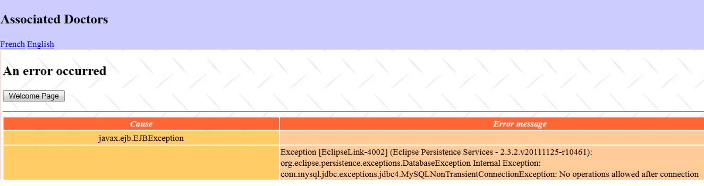 |
Ces différentes vues sont obtenues avec les pages suivantes du projet web :
 |
- en [1], les pages [basdepage, entete, layout] assurent la mise en forme de toutes les vues,
- en [2], la vue produite par [layout.xhtml].
C'est la technologie des facelets qui a été utilisée ici. Celle-ci a été décrite au paragraphe 2.11. Nous nous contentons de donner le code des pages XHTML utilisées pour la mise en page :
[entete.xhtml]
<?xml version='1.0' encoding='UTF-8' ?>
<!DOCTYPE html PUBLIC "-//W3C//DTD XHTML 1.0 Transitional//EN" "http://www.w3.org/TR/xhtml1/DTD/xhtml1-transitional.dtd">
<html xmlns="http://www.w3.org/1999/xhtml"
xmlns:h="http://java.sun.com/jsf/html"
xmlns:f="http://java.sun.com/jsf/core"
xmlns:ui="http://java.sun.com/jsf/facelets">
<body>
<h2><h:outputText value="#{msg['layout.entete']}"/></h2>
<div align="left">
<h:commandLink value="#{msg['layout.entete.langue1']}" actionListener="#{changeLocale.setFrenchLocale}"/>
<h:outputText value=" "/>
<h:commandLink value="#{msg['layout.entete.langue2']}" actionListener="#{changeLocale.setEnglishLocale}"/>
</div>
</body>
</html>
On notera lignes 10-12, les deux liens pour changer la langue de l'application.
[basdepage.xhtml]
<?xml version='1.0' encoding='UTF-8' ?>
<!DOCTYPE html PUBLIC "-//W3C//DTD XHTML 1.0 Transitional//EN" "http://www.w3.org/TR/xhtml1/DTD/xhtml1-transitional.dtd">
<html xmlns="http://www.w3.org/1999/xhtml"
xmlns:h="http://java.sun.com/jsf/html">
<body>
<h:outputText value="#{msg['layout.basdepage']}"/>
</body>
</html>
[layout.xhtml]
<?xml version='1.0' encoding='UTF-8' ?>
<!DOCTYPE html PUBLIC "-//W3C//DTD XHTML 1.0 Transitional//EN" "http://www.w3.org/TR/xhtml1/DTD/xhtml1-transitional.dtd">
<html xmlns="http://www.w3.org/1999/xhtml"
xmlns:h="http://java.sun.com/jsf/html"
xmlns:f="http://java.sun.com/jsf/core"
xmlns:ui="http://java.sun.com/jsf/facelets">
<f:view locale="#{changeLocale.locale}">
<h:head>
<title>RdvMedecins</title>
<h:outputStylesheet library="css" name="styles.css"/>
</h:head>
<h:body style="background-image: url('${request.contextPath}/resources/images/standard.jpg');">
<h:form id="formulaire">
<table style="width: 1200px">
<tr>
<td colspan="2" bgcolor="#ccccff">
<ui:include src="entete.xhtml"/>
</td>
</tr>
<tr>
<td style="width: 100px; height: 200px" bgcolor="#ffcccc">
</td>
<td>
<ui:insert name="contenu" >
<h2>Contenu</h2>
</ui:insert>
</td>
</tr>
<tr bgcolor="#ffcc66">
<td colspan="2">
<ui:include src="basdepage.xhtml"/>
</td>
</tr>
</table>
</h:form>
</h:body>
</f:view>
</html>
Cette page est le modèle (template) de la page [index.xhtml] :
<?xml version='1.0' encoding='UTF-8' ?>
<!DOCTYPE html PUBLIC "-//W3C//DTD XHTML 1.0 Transitional//EN" "http://www.w3.org/TR/xhtml1/DTD/xhtml1-transitional.dtd">
<html xmlns="http://www.w3.org/1999/xhtml"
xmlns:h="http://java.sun.com/jsf/html"
xmlns:f="http://java.sun.com/jsf/core"
xmlns:ui="http://java.sun.com/jsf/facelets">
<ui:composition template="layout.xhtml">
<ui:define name="contenu">
<h:panelGroup rendered="#{form.form1Rendered}">
<ui:include src="form1.xhtml"/>
</h:panelGroup>
<h:panelGroup rendered="#{form.form2Rendered}">
<ui:include src="form2.xhtml"/>
</h:panelGroup>
<h:panelGroup rendered="#{form.form3Rendered}">
<ui:include src="form3.xhtml"/>
</h:panelGroup>
<h:panelGroup rendered="#{form.erreurRendered}">
<ui:include src="erreur.xhtml"/>
</h:panelGroup>
</ui:define>
</ui:composition>
</html>
Les lignes 8-21 définissent la zone appelée " contenu " (ligne 8) dans [layout.xhtml] (ligne 7). C'est la zone centrale des vues :
 |
La page [index.xhtml] est l'unique page de l'application. Il n'y aura donc aucune navigation entre pages. Elle affiche l'une des quatre pages [form1.xhtml, form2.xhtml, form3.xhtml, erreur.xhtml]. Cet affichage est contrôlé par quatre booléens [form1Rendered, form2Rendered, form3Rendered, erreurRendered] du bean form que nous allons décrire prochainement.
3.6.5. Les beans du projet
 |
Les classes du paquetage [utils] ont déjà été présentées :
- la classe [ChangeLocale] est la classe qui assure le changement de langue. Elle a déjà été étudiée (paragraphe 2.4.4).
- la classe [Messages] est une classe qui facilite l'internationalisation des messages d'une application. Elle a été étudiée au paragraphe 2.8.5.7,.
3.6.5.1. Le bean Application
Le bean [Application] est le suivant :
package beans;
import java.util.ArrayList;
import java.util.HashMap;
import java.util.List;
import java.util.Map;
import javax.annotation.PostConstruct;
import javax.ejb.EJB;
import javax.enterprise.context.ApplicationScoped;
import javax.inject.Named;
import rdvmedecins.jpa.Client;
import rdvmedecins.jpa.Medecin;
import rdvmedecins.metier.service.IMetierLocal;
@Named(value = "application")
@ApplicationScoped
public class Application implements Serializable{
// couche métier
@EJB
private IMetierLocal metier;
// cache
private List<Medecin> medecins;
private List<Client> clients;
private Map<Long, Medecin> hMedecins = new HashMap<Long, Medecin>();
private Map<Long, Client> hClients = new HashMap<Long, Client>();
// erreurs
private List<Erreur> erreurs = new ArrayList<Erreur>();
private Boolean erreur = false;
public Application() {
}
@PostConstruct
public void init() {
// on met les médecins et les clients en cache
try {
medecins = metier.getAllMedecins();
clients = metier.getAllClients();
} catch (Throwable th) {
// on note l'erreur
erreur = true;
erreurs.add(new Erreur(th.getClass().getName(), th.getMessage()));
while (th.getCause() != null) {
th = th.getCause();
erreurs.add(new Erreur(th.getClass().getName(), th.getMessage()));
}
return;
}
// vérification des listes
if (medecins.size() == 0) {
// on note l'erreur
erreur = true;
erreurs.add(new Erreur("", "La liste des médecins est vide"));
}
if (clients.size() == 0) {
// on note l'erreur
erreur = true;
erreurs.add(new Erreur("", "La liste des clients est vide"));
}
// erreur ?
if (erreur) {
return;
}
// les dictionnaires
for (Medecin m : medecins) {
hMedecins.put(m.getId(), m);
}
for (Client c : clients) {
hClients.put(c.getId(), c);
}
}
// getters et setters
...
}
- lignes 15-16 : la classe [Application] est un bean de portée Application. Elle est créée une fois au début du cycle de vie de l'application JSF et est accessible à toutes les requêtes de tous les utilisateurs. On y place en général des données en lecture seule. Ici, nous y placerons la liste des médecins et celle des clients. Nous faisons donc l'hypothèse que celles-ci ne changent pas souvent. Les pages XHTML y ont accès via le nom application,
- lignes 20-21 : une référence sur l'interface locale de l'EJB [Metier] sera injectée par le conteneur EJB de Glassfish. Rappelons-nous l'architecture de l'application :
 |
L'application JSF et l'EJB [Metier] vont s'exécuter dans la même JVM (Java Virtual Machine). Donc la couche [JSF] va utiliser l'interface locale de l'EJB. Ici, le bean application utilise l'EJB [Metier]. Même si ce n'était pas le cas, il serait normal d'y trouver une référence sur la couche [métier]. C'est en effet une information qui peut être partagée par toutes les requêtes de tous les utilisateurs donc une donnée de portée Application.
- lignes 34-35 : la méthode init est exécutée juste après l'instanciation de la classe [Application] (présence de l'annotation @PostConstruct),
- lignes 36-73, la méthode crée les éléments suivants : la liste des médecins de la ligne 23, celle des clients de la ligne 24, un dictionnaire des médecins indexé par leur id en ligne 25, et le même pour les clients ligne 26. Il peut se produire des erreurs. Celles-ci sont consignées dans la liste de la ligne 28.
La classe [Erreur] est la suivante :
package beans;
public class Erreur {
public Erreur() {
}
// champ
private String classe;
private String message;
// constructeur
public Erreur(String classe, String message){
this.setClasse(classe);
this.message=message;
}
// getters et setters
...
}
- ligne 9, le nom d'une classe d'exception si une exception a été lancée,
- ligne 10 : un message d'erreur.
3.6.5.2. Le bean [Form]
Son code est le suivant :
package beans;
...
@Named(value = "form")
@SessionScoped
public class Form implements Serializable {
public Form() {
}
// bean Application
@Inject
private Application application;
// modèle
private Long idMedecin;
private Date jour = new Date();
private Boolean form1Rendered = true;
private Boolean form2Rendered = false;
private Boolean form3Rendered = false;
private Boolean erreurRendered = false;
private String form2Titre;
private String form3Titre;
private AgendaMedecinJour agendaMedecinJour;
private Long idCreneau;
private Medecin medecin;
private Client client;
private Long idClient;
private CreneauMedecinJour creneauChoisi;
private List<Erreur> erreurs;
@PostConstruct
private void init() {
// l'initialisation s'est-elle bien passée ?
if (application.getErreur()) {
// on récupère la liste des erreurs
erreurs = application.getErreurs();
// la vue des erreurs est affichée
setForms(false, false, false, true);
}
}
// affichage vue
private void setForms(Boolean form1Rendered, Boolean form2Rendered, Boolean form3Rendered, Boolean erreurRendered) {
this.form1Rendered = form1Rendered;
this.form2Rendered = form2Rendered;
this.form3Rendered = form3Rendered;
this.erreurRendered = erreurRendered;
}
.................................................
}
- lignes 5-7 : la classe [Form] est un bean de nom form et de portée session. On rappelle qu'alors la classe doit être sérialisable.
- lignes 13-14 : le bean form a une référence sur le bean application. Celle-ci sera injectée par le conteneur de servlets dans lequel s'exécute l'application (présence de l'annotation @Inject).
- lignes 17-31 : le modèle des pages [form1.xhtml, form2.xhtml, form3.xhtml, erreur.xhtml]. L'affichage de ces pages est contrôlé par les booléens des lignes 19-22. On remarquera que par défaut, c'est la page [form1.xhtml] qui est rendue,
- lignes 33-34 : la méthode init est exécutée juste après l'instanciation de la classe (présence de l'annotation @PostConstruct),
- lignes 35-41 : la méthode init est utilisée pour savoir quelle page doit être affichée en premier : normalement la page [form1.xhtml] (ligne 19) sauf si l'initialisation de l'application s'est mal passée (ligne 36) auquel cas c'est la page [erreur.xhtml] qui sera affichée (ligne 40).
La page [erreur.xhtml] est la suivante :
<?xml version='1.0' encoding='UTF-8' ?>
<!DOCTYPE html PUBLIC "-//W3C//DTD XHTML 1.0 Transitional//EN" "http://www.w3.org/TR/xhtml1/DTD/xhtml1-transitional.dtd">
<html xmlns="http://www.w3.org/1999/xhtml"
xmlns:h="http://java.sun.com/jsf/html"
xmlns:f="http://java.sun.com/jsf/core"
xmlns:ui="http://java.sun.com/jsf/facelets">
<body>
<h2><h:outputText value="#{msg['erreur.titre']}"/></h2>
<p>
<h:commandButton value="#{msg['erreur.accueil']}" actionListener="#{form.accueil()}"/>
</p>
<hr/>
<h:dataTable value="#{form.erreurs}" var="erreur" headerClass="erreursHeaders" columnClasses="erreurClasse,erreurMessage">
<h:column>
<f:facet name="header">
<h:outputText value="#{msg['erreur.classe']}"/>
</f:facet>
<h:outputText value="#{erreur.classe}"/>
</h:column>
<h:column>
<f:facet name="header">
<h:outputText value="#{msg['erreur.message']}"/>
</f:facet>
<h:outputText value="#{erreur.message}"/>
</h:column>
</h:dataTable>
</body>
</html>
Elle utilise une balise <h:dataTable> (lignes 14-27) pour afficher la liste des erreurs. Cela donne une page analogue à la suivante :
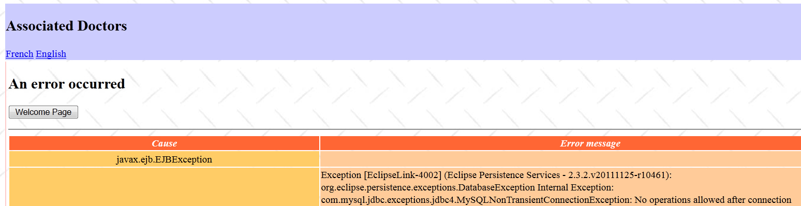
Nous allons maintenant définir les différentes phases de la vie de l'application.
3.6.6. Interactions entre pages et modèle
3.6.6.1. L'affichage de la page d'accueil
Si tout va bien, la première page affichée est [form1.xhtml]. Cela donne la vue suivante :
|
La page [form1.xhtml] est la suivante :
<?xml version='1.0' encoding='UTF-8' ?>
<!DOCTYPE html PUBLIC "-//W3C//DTD XHTML 1.0 Transitional//EN" "http://www.w3.org/TR/xhtml1/DTD/xhtml1-transitional.dtd">
<html xmlns="http://www.w3.org/1999/xhtml"
xmlns:h="http://java.sun.com/jsf/html"
xmlns:f="http://java.sun.com/jsf/core"
xmlns:ui="http://java.sun.com/jsf/facelets">
<body>
<h2><h:outputText value="#{msg['form1.titre']}"/></h2>
<h:panelGrid columns="3">
<h:panelGroup>
<div align="center"><h3><h:outputText value="#{msg['form1.medecin']}"/></h3></div>
</h:panelGroup>
<h:panelGroup>
<div align="center"><h3><h:outputText value="#{msg['form1.jour']}"/></h3></div>
</h:panelGroup>
<h:panelGroup/>
<h:selectOneMenu value="#{form.idMedecin}">
<f:selectItems value="#{form.medecins}" var="medecin" itemLabel="#{medecin.titre} #{medecin.prenom} #{medecin.nom}" itemValue="#{medecin.id}"/>
</h:selectOneMenu>
<h:inputText id="jour" value="#{form.jour}" required="true" requiredMessage="#{msg['form1.jour.required']}" converterMessage="#{msg['form1.jour.erreur']}">
<f:convertDateTime pattern="dd/MM/yyyy"/>
</h:inputText>
<h:message for="jour" styleClass="error"/>
</h:panelGrid>
<h:commandButton value="#{msg['form1.button.agenda']}" actionListener="#{form.getAgenda}"/>
</body>
</html>
Cette page est alimentée par le modèle suivant :
@Named(value = "form")
@SessionScoped
public class Form implements Serializable {
// bean Application
@Inject
private Application application;
// modèle
private Long idMedecin;
private Date jour = new Date();
// liste des médecins
public List<Medecin> getMedecins() {
return application.getMedecins();
}
// agenda
public void getAgenda() {
...
}
- le champ de la ligne 9 alimente en lecture et écriture la valeur de la liste de la ligne 18 de la page. A l'affichage initial de la page, elle fixe la valeur sélectionnée dans le combo. A l'affichage initial, idMedecin est égal à null, donc c'est le premier médecin qui sera sélectionné,
- la méthode des lignes 13-15 génère les éléments du combo des médecins (ligne 19 de la page). Chaque option générée aura pour label (itemLabel) les titre, nom, prénom du médecin et pour valeur (itemValue), l'id du médecin,
- le champ de la ligne 10 alimente en lecture / écriture le champ de saisie de la ligne 21 de la page. A l'affichage initial, c'est donc la date du jour qui est affichée,
- lignes 17-19 : la méthode getAgenda gère le clic sur le bouton [Agenda] de la ligne 26 de la page. Comme il n'y a pas de navigation (c'est toujours la page [index.html] qui est demandée), on utilisera souvent l'attribut actionListener à la place de l'attribut action. Dans ce cas, la méthode appelée dans le modèle ne rend aucun résultat.
Lorsqu'a lieu le clic sur le bouton [Agenda],
- des valeurs sont postées : la valeur sélectionnée dans le combo des médecins est enregistrée dans le champ idMedecin du modèle et le jour choisi dans le champ jour,
- la méthode getAgenda du modèle est appelée.
La méthode getAgenda est la suivante :
// bean Application
@Inject
private Application application;
// modèle
private Long idMedecin;
private Date jour = new Date();
private Boolean form1Rendered = true;
private Boolean form2Rendered = false;
private Boolean form3Rendered = false;
private Boolean erreurRendered = false;
private String form2Titre;
private AgendaMedecinJour agendaMedecinJour;
private Medecin medecin;
private List<Erreur> erreurs;
// agenda
public void getAgenda() {
try {
// on récupère le médecin
medecin = application.gethMedecins().get(idMedecin);
// titre formulaire 2
form2Titre = Messages.getMessage(null, "form2.titre", new Object[]{medecin.getTitre(), medecin.getPrenom(), medecin.getNom(), new SimpleDateFormat("dd MMM yyyy").format(jour)}).getSummary();
// l'agenda du médecin pour un jour donné
agendaMedecinJour = application.getMetier().getAgendaMedecinJour(medecin, jour);
// on affiche le formulaire 2
setForms(false, true, false, false);
} catch (Throwable th) {
// vue des erreurs
prepareVueErreur(th);
}
}
// préparation vueErreur
private void prepareVueErreur(Throwable th) {
// on crée la liste des erreurs
erreurs = new ArrayList<Erreur>();
erreurs.add(new Erreur(th.getClass().getName(), th.getMessage()));
while (th.getCause() != null) {
th = th.getCause();
erreurs.add(new Erreur(th.getClass().getName(), th.getMessage()));
}
// la vue des erreurs est affichée
setForms(false, false, false, true);
}
Rappelons ce que doit afficher la méthode getAgenda :
 |
- ligne 21 : on récupère le médecin sélectionné dans le dictionnaire des médecins qui a été stocké dans le bean application. On utilise pour cela son id qui a été posté dans idMedecin,
- ligne 23 : on prépare le titre de la page [form2.xhtml] qui va être affichée. Ce message est pris dans le fichier des messages afin qu'il soit internationalisé. Cette technique a été décrite au paragraphe 2.8.5.7, page 135.
- ligne 25 : on fait appel à la couche [métier] pour calculer l'agenda du médecin choisi pour le jour choisi,
- ligne 27 : on affiche [form2.xhtml],
- ligne 28 : si on a une exception, une liste d'erreurs est alors construite (lignes 37-42) et la page [erreur.xhtml] est affichée (ligne 44).
3.6.6.2. Afficher l'agenda d'un médecin
La page [form2.xhtml] correspond à la vue suivante :
 |
Le code de la page [form2.xhtml] est le suivant :
<?xml version='1.0' encoding='UTF-8' ?>
<!DOCTYPE html PUBLIC "-//W3C//DTD XHTML 1.0 Transitional//EN" "http://www.w3.org/TR/xhtml1/DTD/xhtml1-transitional.dtd">
<html xmlns="http://www.w3.org/1999/xhtml"
xmlns:h="http://java.sun.com/jsf/html"
xmlns:f="http://java.sun.com/jsf/core"
xmlns:ui="http://java.sun.com/jsf/facelets"
xmlns:c="http://java.sun.com/jsp/jstl/core">
<body>
<h2><h:outputText value="#{form.form2Titre}"/></h2>
<h:commandButton value="#{msg['form2.accueil']}" action="#{form.accueil}" />
<h:dataTable value="#{form.agendaMedecinJour.creneauxMedecinJour}" var="creneauMedecinJour" headerClass="reservationsHeaders" columnClasses="creneau,client,action">
<h:column>
<f:facet name="header">
<h:outputText value="#{msg['form2.creneauHoraire']}"/>
</f:facet>
<h:outputText value="#{creneauMedecinJour.creneau.hdebut}:#{creneauMedecinJour.creneau.mdebut} - #{creneauMedecinJour.creneau.hfin}:#{creneauMedecinJour.creneau.mfin}" />
</h:column>
<h:column>
<f:facet name="header">
<h:outputText value="#{msg['form2.client']}"/>
</f:facet>
<c:if test="#{creneauMedecinJour.rv==null}">
<h:outputText value=""/>
<c:otherwise>
<h:outputText value="#{creneauMedecinJour.rv.client.titre} #{creneauMedecinJour.rv.client.prenom} #{creneauMedecinJour.rv.client.nom}"/>
</c:otherwise>
</c:if>
</h:column>
<h:column>
<f:facet name="header"/>
<h:commandLink action="#{form.action()}" value="#{creneauMedecinJour.rv==null ? msg['form2.reserver'] : msg['form2.supprimer']}">
<f:setPropertyActionListener value="#{creneauMedecinJour.creneau.id}" target="#{form.idCreneau}"/>
</h:commandLink>
</h:column>
</h:dataTable>
</body>
</html>
On se rappelle que la méthode getAgenda a initialisé deux champs dans le modèle :
// modèle
private String form2Titre;
private AgendaMedecinJour agendaMedecinJour;
Ces deux champs alimentent la page [form2.xhtml] :
- ligne 10, le titre de la page,
- ligne 12 : l'agenda du médecin est affiché par une balise <h:dataTable> à trois colonnes,
- lignes 13-18 : la première colonne affiche les créneaux horaires,
- lignes 19-30 : la deuxième colonne affiche le nom du client qui a éventuellement réservé le créneau horaire ou rien sinon. Pour faire ce choix, on utilise les balises de la bibliothèque JSTL Core référencée ligne 7,
- lignes 30-35 : la troisième colonne affiche le lien [Réserver] si le créneau est libre, le lien [Supprimer] si le créneau est occupé.
Les liens de la troisième colonne sont liés au modèle suivant :
// modèle
private Long idCreneau;
// action sur RV
public void action() {
...
}
- la méthode action est appelée lorsque l'utilisateur clique sur le lien Réserver / Supprimer (ligne 32). On remarquera qu'on a utilisé ici l'attribut action. La méthode pointée par cet attribut devrait avoir la signature String action() parce que la méthode doit alors rendre une clé de navigation. Or ici, elle est void action(). Cela n'a pas provoqué d'erreur et on peut supposer que dans ce cas il n'y a pas de navigation. C'est ce qui était désiré. Mettre actionListener au lieu d'action provoquait un dysfonctionnement,
- le champ idCreneau de la ligne 2 va récupérer l'id du créneau horaire du lien qui a été cliqué (ligne 33 de la page).
3.6.6.3. Suppression d'un rendez-vous
Examinons le code qui gère la suppression d'un rendez-vous. Cela correspond à la séquence de vues suivante :
 |
Le code concerné par cette opération est le suivant :
// bean Application
@Inject
private Application application;
// modèle
private Boolean form1Rendered = true;
private Boolean form2Rendered = false;
private Boolean form3Rendered = false;
private Boolean erreurRendered = false;
private AgendaMedecinJour agendaMedecinJour;
private Long idCreneau;
private CreneauMedecinJour creneauChoisi;
private List<Erreur> erreurs;
// action sur RV
public void action() {
// on recherche le créneau dans l'agenda
int i = 0;
Boolean trouvé = false;
while (!trouvé && i < agendaMedecinJour.getCreneauxMedecinJour().length) {
if (agendaMedecinJour.getCreneauxMedecinJour()[i].getCreneau().getId() == idCreneau) {
trouvé = true;
} else {
i++;
}
}
// a-t-on trouvé ?
if (!trouvé) {
// c'est bizarre - on réaffiche form2
setForms(false, true, false, false);
return;
}
// on a trouvé
creneauChoisi = agendaMedecinJour.getCreneauxMedecinJour()[i];
// selon l'action désirée
if (creneauChoisi.getRv() == null) {
reserver();
} else {
supprimer();
}
}
// réservation
public void reserver() {
...
}
public void supprimer() {
try {
// suppression d'un Rdv
application.getMetier().supprimerRv(creneauChoisi.getRv());
// on remet à jour l'agenda
agendaMedecinJour = application.getMetier().getAgendaMedecinJour(medecin, jour);
// on affiche form2
setForms(false, true, false, false);
} catch (Throwable th) {
// vue erreurs
prepareVueErreur(th);
}
}
- ligne 16 : lorsque la méthode action démarre, l'id du créneau horaire sélectionné a été posté dans idCreneau (ligne 11),
- lignes 18-26 : on cherche à récupérer le créneau horaire à partir de son id (ligne 21). On le cherche dans l'agenda courant, agendaMedecinJour de la ligne 10. Normalement on doit le trouver. Si ce n'est pas le cas, on ne fait rien (lignes 28-32),
- ligne 34 : si on a touvé le créneau cherché, on en récupère une référence qu'on stocke en ligne 12,
- ligne 36 : on regarde si le créneau choisi avait un rendez-vous. Si oui, on le supprime (ligne 39), sinon on en réserve un (ligne 37),
- ligne 51 : le rendez-vous du créneau choisi est supprimé. C'est la couche [métier] qui fait ce travail,
- ligne 53 : on demande à la couche [métier] le nouvel agenda du médecin. On va bien sûr y voir un rendez-vous de moins. Mais comme l'application est multi-utilisateurs, on peut y voir des modifications apportées par d'autres utilisateurs,
- ligne 55 : on réaffiche la page [form2.xhtml],
- ligne 58 : comme la couche [métier] a été sollicitée, des exceptions peuvent surgir. Dans ce cas, on mémorise la pile des exceptions dans la liste d'erreurs de la ligne 13 et on les affiche à l'aide de la vue [erreur.xhtml].
3.6.6.4. Prise de rendez-vous
La prise de rendez-vous correspond à la séquence suivante :
 |
Le modèle impliqué dans cette action est le suivant :
// modèle
private Date jour = new Date();
private Boolean form1Rendered = true;
private Boolean form2Rendered = false;
private Boolean form3Rendered = false;
private Boolean erreurRendered = false;
private String form3Titre;
private AgendaMedecinJour agendaMedecinJour;
private Medecin medecin;
private CreneauMedecinJour creneauChoisi;
private List<Erreur> erreurs;
// action sur RV
public void action() {
...
// on a trouvé
creneauChoisi = agendaMedecinJour.getCreneauxMedecinJour()[i];
// selon l'action désirée
if (creneauChoisi.getRv() == null) {
reserver();
} else {
supprimer();
}
}
// réservation
public void reserver() {
try {
// titre formulaire 3
form3Titre = Messages.getMessage(null, "form3.titre", new Object[]{medecin.getTitre(), medecin.getPrenom(), medecin.getNom(), new SimpleDateFormat("dd MMM yyyy").format(jour),
creneauChoisi.getCreneau().getHdebut(), creneauChoisi.getCreneau().getMdebut(), creneauChoisi.getCreneau().getHfin(), creneauChoisi.getCreneau().getMfin()}).getSummary();
// client sélectionné dans le combo
idClient=null;
// on affiche le formulaire 3
setForms(false, false, true, false);
} catch (Throwable th) {
// vue erreurs
prepareVueErreur(th);
}
}
- ligne 14 : si le créneau choisi n'a pas de rendez-vous alors c'est une réservation,
- ligne 30 : on prépare le titre de la page [form3.xhtml] avec la même technique que celle utilisée pour le titre de la page [form2.xhtml],
- ligne 34 : dans ce formulaire, il y a un combo dont la valeur est alimentée par idClient. On met la valeur de ce champ à null pour ne sélectionner personne,
- ligne 36 : on affiche la page [form3.xhtml],
- ligne 39 : ou la page d'erreurs s'il y a eu une exception.
La page [form3.xhtml] est la suivante :
<?xml version='1.0' encoding='UTF-8' ?>
<!DOCTYPE html PUBLIC "-//W3C//DTD XHTML 1.0 Transitional//EN" "http://www.w3.org/TR/xhtml1/DTD/xhtml1-transitional.dtd">
<html xmlns="http://www.w3.org/1999/xhtml"
xmlns:h="http://java.sun.com/jsf/html"
xmlns:f="http://java.sun.com/jsf/core"
xmlns:ui="http://java.sun.com/jsf/facelets">
<body>
<h2><h:outputText value="#{form.form3Titre}"/></h2>
<h:panelGrid columns="2">
<h:outputText value="#{msg['form3.client']}"/>
<h:selectOneMenu value="#{form.idClient}">
<f:selectItems value="#{form.clients}" var="client" itemLabel="#{client.titre} #{client.prenom} #{client.nom}" itemValue="#{client.id}"/>
</h:selectOneMenu>
<h:panelGroup>
<h:commandButton value="#{msg['form3.valider']}" actionListener="#{form.validerRv}" />
<h:commandButton value="#{msg['form3.annuler']}" actionListener="#{form.annulerRv}"/>
</h:panelGroup>
</h:panelGrid>
</body>
</html>
Cette page est alimentée par le modèle suivant :
// bean Application
@Inject
private Application application;
// modèle
private Long idClient;
// liste des clients
public List<Client> getClients() {
return application.getClients();
}
- ligne 6 : le n° du client alimente l'attribut value du combo des clients de la ligne 12 de la page. Il fixe l'élément du combo sélectionné,
- lignes 9-11 : la méthode getClients alimente le contenu du combo (ligne 13). Le libellé (itemLabel) de chaque option est [Titre Prénom Nom] du client, et la valeur associée (itemValue) est l'id du client. C'est donc cette valeur qui sera postée.
3.6.6.5. Validation d'un rendez-vous
La validation d'un rendez-vous correspond à la séquence suivante :
 |
et correspond au clic sur le bouton [Valider] :
<h:commandButton value="#{msg['form3.valider']}" actionListener="#{form.validerRv}" />
C'est donc la méthode [Form].validerRv qui va gérer cet évènement. Son code est le suivant :
// bean Application
@Inject
private Application application;
// modèle
private Date jour = new Date();
private Boolean form1Rendered = true;
private Boolean form2Rendered = false;
private Boolean form3Rendered = false;
private Boolean erreurRendered = false;
private Long idCreneau;
private Long idClient;
private List<Erreur> erreurs;
// validation Rv
public void validerRv() {
try {
// on récupère une instance du créneau horaire choisi
Creneau creneau = application.getMetier().getCreneauById(idCreneau);
// on ajoute le Rv
application.getMetier().ajouterRv(jour, creneau, application.gethClients().get(idClient));
// on remet à jour l'agenda
agendaMedecinJour = application.getMetier().getAgendaMedecinJour(medecin, jour);
// on affiche form2
setForms(false, true, false, false);
} catch (Throwable th) {
// vue erreurs
prepareVueErreur(th);
}
}
- ligne 12 : avant que la méthode validerRv ne s'exécute, le champ idClient a reçu l'id du client sélectionné par l'utilisateur,
- ligne 19 : à partir de l'id du créneau horaire mémorisé dans une précédente étape (le bean est de portée session), on demande à la couche [métier] une référence sur le créneau horaire lui-même,
- ligne 21 : on demande à la couche [métier] d'ajouter un rendez-vous pour le jour choisi (jour), le créneau horaire choisi (creneau) et le client choisi (idClient),
- ligne 23 : on demande à la couche [métier] de rafraîchir l'agenda du médecin. On verra le rendez-vous ajouté plus toutes les modifications que d'autres utilisateurs de l'application ont pu faire,
- ligne 25 : on réaffiche l'agenda [form2.xhtml],
- ligne 28 : on affiche la page d'erreur si une erreur se produit.
3.6.6.6. Annulation d'une prise de rendez-vous
Cela correspond à la séquence suivante :
 |
Le bouton [Annuler] dans la page [form3.xhtml] est le suivant :
<h:commandButton value="#{msg['form3.annuler']}" actionListener="#{form.annulerRv}"/>
La méthode [Form].annulerRv est donc appelée :
// annulation prise de Rdv
public void annulerRv() {
// on affiche form2
setForms(false, true, false, false);
}
3.6.6.7. Retour à la page d'accueil
Il reste une action à voir, celle de la séquence suivante :
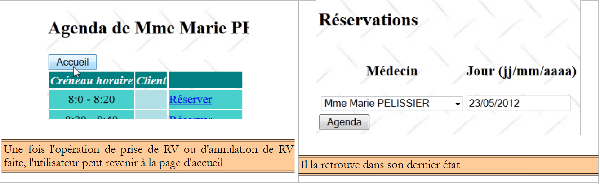 |
Le code du bouton [Accueil] dans la page [form2.xhtml] est le suivant :
<h:commandButton value="#{msg['form2.accueil']}" action="#{form.accueil}" />
La méthode [Form].accueil est la suivante :
public void accueil() {
// on affiche la page d'accueil
setForms(true, false, false, false);
}
3.7. Conclusion
Nous avons construit l'application suivante :
 |
Nous nous sommes intéressés aux fonctionnalités de l'application plus qu'à son aspect pour l'utilisateur. Celui-ci sera amélioré avec l'utilisation de la bibliothèque de composants PrimeFaces. Nous avons construit une application basique mais néanmoins représentative d'une architecture Java EE en couches utilisant des EJB. L'application peut être améliorée de diverses façons :
- une authentification est nécessaire. Tout le monde n'est pas autorisé à ajouter / supprimer des rendez-vous,
- on devrait pouvoir faire défiler l'agenda en avant et en arrière lorsqu'on cherche un jour avec des créneaux libres,
- on devrait pouvoir demander la liste des jours où il existe des créneaux libres pour un médecin. En effet, si celui-ci est ophtalmologue ses rendez-vous sont généralement pris six mois à l'avance,
- ...
3.8. Les tests avec Eclipse
3.8.1. La couche [DAO]
 |
- en [1], on importe le projet EJB de la couche [DAO] et son client,
- en [2], on sélectionne le projet EJB de la couche [DAO] et on l'exécute [3],
- en [4], on l'exécute sur un serveur,
 |
- en [5], seul le serveur Glassfish est proposé car c'est le seul ayant un conteneur EJB,
- en [6], le module EJB a été déployé,
 |
- en [7], on affiche les logs :
Ce sont ceux qu'on avait avec Netbeans.
 |
- en [7A] [7B] on exécute le test JUnit du client,
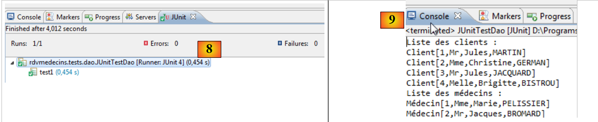 |
- en [8], le test est réussi,
- en [9], les logs de la console.
 |
En [10], on décharge l'application EJB.
3.8.2. La couche [métier]
 |
- en [1], on importe les quatre projets Maven de la couche [métier],
- en [2], on sélectionne le projet d'entreprise et on l'exécute en [3], sur un serveur Glassfish [4] [5],
 |
- en [6], le projet d'entreprise a été déployé sur Glassfish,
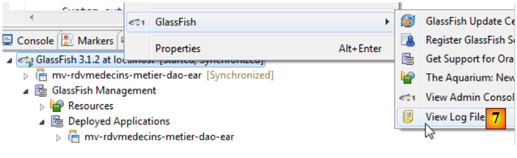 |
- en [7], on regarde les logs de Glassfish,
Ligne 3, nous notons le nom portable de l'EJB [Metier] et nous le collons dans le client console de cet EJB :
public class ClientRdvMedecinsMetier {
// le nom de l'interface distante de l'EJB [Metier]
private static String IDaoRemoteName = "java:global/mv-rdvmedecins-metier-dao-ear/mv-rdvmedecins-ejb-metier-1.0-SNAPSHOT/Metier!rdvmedecins.metier.service.IMetierRemote";
// date du jour
private static Date jour = new Date();
 |
- en [8], on exécute le client console,
- en [9], ses logs.
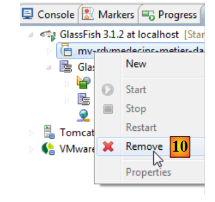 |
- en [10], on décharge l'application d'entreprise ;
3.8.3. La couche [web]
 |
- en [1], on importe les trois projets Maven de la couche [web]. Celui suffixé par ear est le projet d'entreprise qu'il faut déployer sur Glassfish,
- en [2], on l'exécute,
 |
- sur le serveur Glassfish [3],
- en [4], l'application d'entreprise a bien été déployée,
 |
- en [5], on demande l'URL de l'application dans le navigateur interne d'Eclipse.